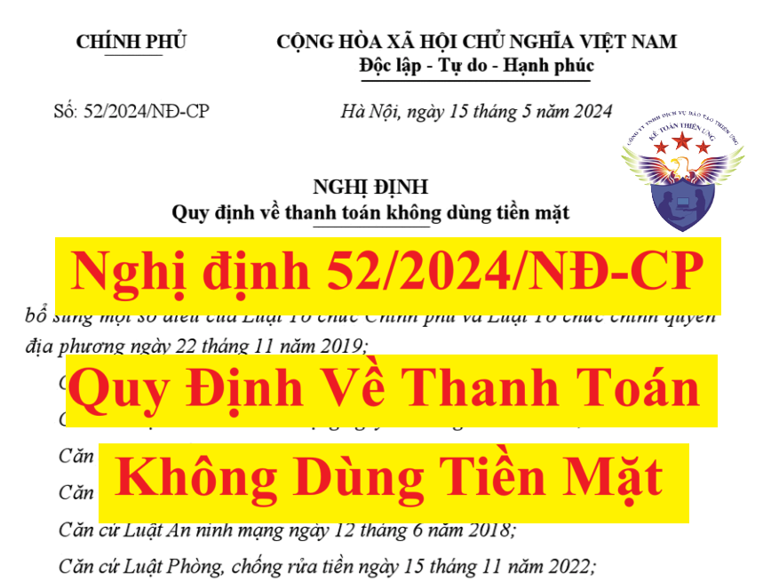

Nghị định 52/2024/NĐ-CP quy định về hoạt động thanh toán không dùng tiền mặt, bao gồm: mở và sử dụng tài khoản thanh toán; dịch vụ thanh toán không dùng tiền mặt; dịch vụ trung gian thanh toán; tổ chức, quản lý và giám sát các hệ thống thanh toán.
Ngày 15/5/2024, Chính phủ ban hành Nghị định 52/2024/NĐ-CP quy định về thanh toán không dùng tiền mặt, trong đó có quy định về ví điện tử, thẻ trả trước.
Nghị định 52/2024/NĐ-CP có hiệu lực thi hành từ ngày 01/7/2024 và thay thế Nghị định 101/2012/NĐ-CP, Nghị định 80/2016/NĐ-CP.
Cụ thể nội dung của Nghị định 52/2024/NĐ-CP như sau:
NGHỊ ĐỊNH QUY ĐỊNH VỀ THANH TOÁN KHÔNG DÙNG TIỀN MẶT Căn cứ Luật Ngân hàng Nhà nước Việt Nam ngày 16 tháng 6 năm 2010; Căn cứ Luật Các tổ chức tín dụng ngày 18 tháng 01 năm 2024; Căn cứ Luật Đầu tư ngày 17 tháng 6 năm 2020; Căn cứ Luật Ngân sách nhà nước ngày 25 tháng 6 năm 2015; Căn cứ Luật An ninh mạng ngày 12 tháng 6 năm 2018; Căn cứ Luật Phòng, chống rửa tiền ngày 15 tháng 11 năm 2022; Căn cứ Luật Phòng, chống khủng bố ngày 12 tháng 6 năm 2013; Căn cứ Luật Bưu chính ngày 17 tháng 6 năm 2010; Theo đề nghị của Thống đốc Ngân hàng Nhà nước Việt Nam; Chính phủ ban hành Nghị định quy định về thanh toán không dùng tiền mặt. Chương I QUY ĐỊNH CHUNG Nghị định này quy định về hoạt động thanh toán không dùng tiền mặt, bao gồm: mở và sử dụng tài khoản thanh toán; dịch vụ thanh toán không dùng tiền mặt; dịch vụ trung gian thanh toán; tổ chức, quản lý và giám sát các hệ thống thanh toán. Điều 2. Đối tượng áp dụng 1. Tổ chức cung ứng dịch vụ thanh toán không dùng tiền mặt. 2. Tổ chức cung ứng dịch vụ trung gian thanh toán. 3. Tổ chức, cá nhân có liên quan đến hoạt động cung ứng dịch vụ thanh toán không dùng tiền mặt, dịch vụ trung gian thanh toán. 4. Tổ chức, cá nhân sử dụng dịch vụ thanh toán không dùng tiền mặt, dịch vụ trung gian thanh toán (sau đây gọi là khách hàng). Điều 3. Giải thích từ ngữ Trong Nghị định này, các từ ngữ dưới đây được hiểu như sau: 1. Dịch vụ thanh toán không dùng tiền mặt (sau đây gọi là dịch vụ thanh toán) bao gồm: dịch vụ thanh toán qua tài khoản thanh toán của khách hàng và dịch vụ thanh toán không qua tài khoản thanh toán của khách hàng. 2. Dịch vụ thanh toán qua tài khoản thanh toán của khách hàng là việc cung ứng phương tiện thanh toán; thực hiện dịch vụ thanh toán séc, lệnh chi, ủy nhiệm chi, nhờ thu, ủy nhiệm thu, thẻ ngân hàng, chuyển tiền, thu hộ, chi hộ và các dịch vụ thanh toán khác cho khách hàng thông qua tài khoản thanh toán của khách hàng. 3. Dịch vụ thanh toán không qua tài khoản thanh toán của khách hàng là việc cung ứng dịch vụ thanh toán, thực hiện giao dịch thanh toán không thông qua tài khoản thanh toán của khách hàng. 4. Tổ chức cung ứng dịch vụ thanh toán không dùng tiền mặt (sau đây gọi là tổ chức cung ứng dịch vụ thanh toán) là tổ chức được cung ứng một hoặc một số dịch vụ thanh toán theo quy định tại Nghị định này, bao gồm: Ngân hàng Nhà nước Việt Nam (sau đây gọi là Ngân hàng Nhà nước), ngân hàng, chi nhánh ngân hàng nước ngoài, quỹ tín dụng nhân dân, tổ chức tài chính vi mô và doanh nghiệp cung ứng dịch vụ bưu chính công ích. 5. Tổ chức cung ứng dịch vụ trung gian thanh toán là tổ chức không phải là ngân hàng, chi nhánh ngân hàng nước ngoài được Ngân hàng Nhà nước cấp Giấy phép hoạt động cung ứng dịch vụ trung gian thanh toán. 6. Doanh nghiệp cung ứng dịch vụ bưu chính công ích là doanh nghiệp được chỉ định theo quy định của Luật Bưu chính. 7. Giao dịch thanh toán không dùng tiền mặt (sau đây gọi là giao dịch thanh toán) là việc sử dụng dịch vụ thanh toán để thực hiện trả tiền hoặc chuyển tiền của tổ chức, cá nhân. 8. Thanh toán quốc tế là giao dịch thanh toán được thực hiện cho một bên liên quan là tổ chức hoặc cá nhân có tài khoản thanh toán hoặc phương tiện thanh toán phát hành ở ngoài lãnh thổ Việt Nam. 9. Chủ tài khoản thanh toán là cá nhân đứng tên mở tài khoản đối với tài khoản của cá nhân hoặc là tổ chức mở tài khoản đối với tài khoản của tổ chức. 10. Phương tiện thanh toán không dùng tiền mặt (sau đây gọi là phương tiện thanh toán) là phương tiện do tổ chức cung ứng dịch vụ thanh toán, công ty tài chính được phép phát hành thẻ tín dụng, tổ chức cung ứng dịch vụ trung gian thanh toán cung ứng dịch vụ ví điện tử phát hành và được khách hàng sử dụng nhằm thực hiện giao dịch thanh toán, bao gồm: séc, lệnh chi, ủy nhiệm chi, nhờ thu, ủy nhiệm thu, thẻ ngân hàng (bao gồm: thẻ ghi nợ, thẻ tín dụng, thẻ trả trước), ví điện tử và các phương tiện thanh toán khác theo quy định của Ngân hàng Nhà nước. 11. Phương tiện thanh toán không hợp pháp là các phương tiện thanh toán không thuộc quy định tại khoản 10 Điều này. 12. Tiền điện tử là giá trị tiền Việt Nam đồng lưu trữ trên các phương tiện điện tử được cung ứng trên cơ sở đối ứng với số tiền được khách hàng trả trước cho ngân hàng, chi nhánh ngân hàng nước ngoài, tổ chức cung ứng dịch vụ trung gian thanh toán cung ứng dịch vụ ví điện tử. 13. Dịch vụ chuyển mạch tài chính là dịch vụ cung ứng hạ tầng kỹ thuật kết nối, truyền dẫn và xử lý dữ liệu điện tử các giao dịch thanh toán trong nước giữa các tổ chức cung ứng dịch vụ thanh toán, công ty tài chính được phép phát hành thẻ tín dụng, tổ chức cung ứng dịch vụ trung gian thanh toán. 14. Dịch vụ chuyển mạch tài chính quốc tế là việc kết nối với hệ thống thanh toán quốc tế để truyền dẫn và xử lý dữ liệu điện tử các giao dịch thanh toán quốc tế. 15. Dịch vụ bù trừ điện tử là dịch vụ cung ứng hạ tầng kỹ thuật, nghiệp vụ để thực hiện việc tiếp nhận, đối chiếu dữ liệu thanh toán và tính toán kết quả số tiền phải thu, phải trả sau khi bù trừ giữa các bên thành viên tham gia để thực hiện việc quyết toán cho các bên có liên quan. 16. Dịch vụ ví điện tử là dịch vụ do ngân hàng, chi nhánh ngân hàng nước ngoài, tổ chức cung ứng dịch vụ trung gian thanh toán cung ứng cho khách hàng để nạp tiền vào ví điện tử, rút tiền ra khỏi ví điện tử và thực hiện giao dịch thanh toán. 17. Dịch vụ hỗ trợ thu hộ, chi hộ là việc tiếp nhận, xử lý dữ liệu điện tử, tính toán kết quả thu hộ, chi hộ, hủy việc thu hộ, chi hộ cho khách hàng có tài khoản thanh toán, thẻ ngân hàng và thực hiện thanh toán cho các bên có liên quan. 18. Dịch vụ cổng thanh toán điện tử là dịch vụ cung ứng hạ tầng kỹ thuật để kết nối, truyền dẫn và xử lý dữ liệu điện tử các giao dịch thanh toán được thực hiện bằng phương tiện thanh toán giữa khách hàng, đơn vị chấp nhận thanh toán với ngân hàng, chi nhánh ngân hàng nước ngoài, công ty tài chính được phép phát hành thẻ tín dụng, tổ chức cung ứng dịch vụ trung gian thanh toán. 19. Hệ thống thanh toán là hệ thống bao gồm các quy định, phương tiện, quy trình, thủ tục, cơ sở hạ tầng kỹ thuật để xử lý, chuyển mạch, bù trừ, quyết toán các giao dịch thanh toán. 20. Hệ thống thanh toán quốc tế là hệ thống thanh toán được thành lập ở nước ngoài và cho phép thực hiện các giao dịch thanh toán quốc tế. 21. Hệ thống thanh toán quan trọng là hệ thống thanh toán có vai trò chủ đạo trong việc phục vụ nhu cầu thanh toán của các chủ thể trong nền kinh tế, có khả năng phát sinh rủi ro hệ thống, đáp ứng ít nhất một trong các tiêu chí sau: a) Là hệ thống thanh toán duy nhất hoặc chiếm tỷ trọng lớn so với tổng giá trị thanh toán của các hệ thống thanh toán cùng loại; hoặc b) Là hệ thống xử lý các giao dịch thanh toán giá trị cao; hoặc c) Là hệ thống được sử dụng để quyết toán cho các hệ thống thanh toán khác hoặc cho các giao dịch trên thị trường tài chính. 22. Rủi ro hệ thống là rủi ro mà một thành viên tham gia hệ thống thanh toán không có khả năng thực hiện các nghĩa vụ tài chính trong hệ thống thanh toán khi đến hạn dẫn đến việc các thành viên tham gia khác cũng không thể thực hiện nghĩa vụ tài chính khi đến hạn, có lan truyền rủi ro đến các hệ thống thanh toán khác. 23. Tài khoản thanh toán chung là tài khoản thanh toán có ít nhất hai chủ thể trở lên cùng đứng tên mở tài khoản. Điều 4. Trách nhiệm quản lý nhà nước của Ngân hàng Nhà nước về hoạt động thanh toán không dùng tiền mặt 1. Ban hành theo thẩm quyền hoặc trình cơ quan có thẩm quyền ban hành các văn bản quy phạm pháp luật về hoạt động thanh toán không dùng tiền mặt; quy định việc quản lý, kết nối, chia sẻ dữ liệu phục vụ hoạt động thanh toán không dùng tiền mặt. 2. Tổ chức, quản lý, vận hành, giám sát hệ thống thanh toán quốc gia; tham gia tổ chức, giám sát sự vận hành của các hệ thống thanh toán quan trọng khác trong nền kinh tế; giám sát hoạt động cung ứng dịch vụ thanh toán và dịch vụ trung gian thanh toán. 3. Chấp thuận bằng văn bản việc tham gia hệ thống thanh toán quốc tế của ngân hàng thương mại, chi nhánh ngân hàng nước ngoài. 4. Cấp, sửa đổi, bổ sung và thu hồi Giấy phép hoạt động cung ứng dịch vụ trung gian thanh toán của tổ chức cung ứng dịch vụ trung gian thanh toán. 5. Chấp thuận và thu hồi văn bản hoạt động cung ứng dịch vụ thanh toán không qua tài khoản thanh toán của khách hàng của doanh nghiệp cung ứng dịch vụ bưu chính công ích. 6. Kiểm tra, thanh tra và xử lý theo thẩm quyền đối với các hành vi vi phạm pháp luật hoạt động thanh toán không dùng tiền mặt của các tổ chức, cá nhân. 7. Quản lý hoạt động hợp tác quốc tế trong lĩnh vực thanh toán; chủ trì, phối hợp với các cơ quan chức năng trong việc quản lý hoạt động thanh toán quốc tế. Điều 5. Thanh toán bằng ngoại tệ và thanh toán quốc tế 1. Thanh toán bằng ngoại tệ và thanh toán quốc tế phải tuân theo các quy định của Nghị định này, pháp luật về quản lý ngoại hối, bảo vệ dữ liệu người dùng, an ninh mạng, quản lý thuế, pháp luật về phòng, chống rửa tiền, tài trợ khủng bố, tài trợ phổ biến vũ khí hủy diệt hàng loạt và các điều ước quốc tế, thỏa thuận quốc tế về thanh toán mà Việt Nam tham gia. Việc áp dụng tập quán thương mại thực hiện theo Điều 3 Luật Các tổ chức tín dụng. 2. Ngân hàng thương mại, chi nhánh ngân hàng nước ngoài được tham gia hệ thống thanh toán quốc tế sau khi đáp ứng các điều kiện quy định tại Điều 21 Nghị định này. 3. Tổ chức nước ngoài cung ứng dịch vụ thanh toán, dịch vụ trung gian thanh toán cho khách hàng là người không cư trú và người nước ngoài cư trú tại Việt Nam để thực hiện giao dịch thanh toán hàng hóa, dịch vụ tại Việt Nam phải thực hiện thông qua ngân hàng thương mại, chi nhánh ngân hàng nước ngoài đã được Ngân hàng Nhà nước chấp thuận tham gia hệ thống thanh toán quốc tế của tổ chức nước ngoài đó. 4. Tổ chức cung ứng dịch vụ chuyển mạch tài chính được kết nối với hệ thống thanh toán quốc tế để thực hiện dịch vụ chuyển mạch tài chính quốc tế sau khi đáp ứng các điều kiện quy định tại Điều 22 Nghị định này. 5. Tổ chức cung ứng dịch vụ trung gian thanh toán (trừ tổ chức cung ứng dịch vụ chuyển mạch tài chính) được cung ứng dịch vụ trung gian thanh toán cho khách hàng để thực hiện giao dịch thanh toán cho hàng hóa, dịch vụ nước ngoài; việc thực hiện thanh toán, quyết toán cho các giao dịch thanh toán quốc tế đó phải được thực hiện thông qua ngân hàng thương mại, chi nhánh ngân hàng nước ngoài đã được Ngân hàng Nhà nước chấp thuận hoạt động ngoại hối trên thị trường quốc tế. 6. Các bên liên quan đến hoạt động thanh toán quốc tế có trách nhiệm cung cấp thông tin đầy đủ, chính xác, kịp thời và đáp ứng các yêu cầu của cơ quan quản lý nhà nước theo quy định của pháp luật Việt Nam. Điều 6. Ví điện tử, thẻ trả trước 1. Ví điện tử, thẻ trả trước là phương tiện lưu trữ tiền điện tử. 2. Ngân hàng, chi nhánh ngân hàng nước ngoài được phát hành, cung ứng ví điện tử, thẻ trả trước. Việc cung ứng, phát hành và sử dụng ví điện tử, thẻ trả trước thực hiện theo quy định của Ngân hàng Nhà nước. 3. Tổ chức cung ứng dịch vụ trung gian thanh toán cung ứng dịch vụ ví điện tử phải đảm bảo duy trì tổng số dư trên tất cả các tài khoản đảm bảo thanh toán cho dịch vụ ví điện tử mở tại ngân hàng, chi nhánh ngân hàng nước ngoài không thấp hơn tổng số dư tất cả các ví điện tử đã phát hành cho khách hàng; chỉ cho phép sử dụng dịch vụ đối với các ví điện tử có liên kết với tài khoản thanh toán, thẻ ghi nợ của chính khách hàng. Điều 7. Tổ chức, quản lý và vận hành hệ thống thanh toán quốc gia 1. Ngân hàng Nhà nước tổ chức, quản lý và vận hành hệ thống thanh toán quốc gia để cung ứng dịch vụ thanh toán cho các thành viên tham gia hệ thống là Ngân hàng Nhà nước, các tổ chức tín dụng, chi nhánh ngân hàng nước ngoài, Kho bạc Nhà nước; thực hiện quyết toán kết quả bù trừ cho các hệ thống thanh toán khác. 2. Ngân hàng Nhà nước quy định việc quản lý, vận hành, đảm bảo an toàn hoạt động của hệ thống thanh toán quốc gia. Điều 8. Các hành vi bị cấm 1. Sửa chữa, tẩy xóa phương tiện thanh toán, chứng từ thanh toán không đúng quy định pháp luật; làm giả phương tiện thanh toán, chứng từ thanh toán; lưu giữ, lưu hành, chuyển nhượng, sử dụng phương tiện thanh toán giả. 2. Xâm nhập hoặc tìm cách xâm nhập, đánh cắp dữ liệu, phá hoại, làm thay đổi trái phép chương trình phần mềm, dữ liệu điện tử sử dụng trong thanh toán; lợi dụng lỗi hệ thống mạng máy tính để trục lợi. 3. Cung cấp không trung thực thông tin có liên quan đến việc cung ứng hoặc sử dụng dịch vụ thanh toán, dịch vụ trung gian thanh toán. 4. Tiết lộ, cung cấp thông tin về số dư trên tài khoản thanh toán, số dư thẻ ngân hàng, số dư ví điện tử và các giao dịch thanh toán của khách hàng tại tổ chức cung ứng dịch vụ thanh toán, tổ chức cung ứng dịch vụ trung gian thanh toán không đúng theo quy định của pháp luật có liên quan. 5. Mở hoặc duy trì tài khoản thanh toán, ví điện tử nặc danh, mạo danh; mua, bán, thuê, cho thuê, mượn, cho mượn tài khoản thanh toán, ví điện tử; thuê, cho thuê, mua, bán, mở hộ thẻ ngân hàng (trừ trường hợp thẻ trả trước vô danh); lấy cắp, thông đồng để lấy cắp, mua, bán thông tin tài khoản thanh toán, thông tin thẻ ngân hàng, thông tin ví điện tử. 6. Phát hành, cung ứng và sử dụng các phương tiện thanh toán không hợp pháp. 7. Thực hiện cung ứng dịch vụ trung gian thanh toán khi chưa được Ngân hàng Nhà nước cấp Giấy phép hoạt động cung ứng dịch vụ trung gian thanh toán. Thực hiện cung ứng dịch vụ thanh toán mà không phải là tổ chức cung ứng dịch vụ thanh toán. 8. Thực hiện, tổ chức thực hiện hoặc tạo điều kiện thực hiện các hành vi: sử dụng, lợi dụng tài khoản thanh toán, phương tiện thanh toán, dịch vụ thanh toán, dịch vụ trung gian thanh toán để đánh bạc, tổ chức đánh bạc, gian lận, lừa đảo, kinh doanh trái pháp luật và thực hiện các hành vi vi phạm pháp luật khác. 9. Tẩy xóa, thay đổi nội dung, mua, bán, chuyển nhượng, cho thuê, cho mượn, làm giả Giấy phép hoạt động cung ứng dịch vụ trung gian thanh toán. 10. Ủy thác, giao đại lý cho tổ chức, cá nhân khác thực hiện hoạt động được phép theo Giấy phép hoạt động cung ứng dịch vụ trung gian thanh toán. 11. Gian lận, giả mạo các giấy tờ chứng minh đủ điều kiện để được cấp Giấy phép hoạt động cung ứng dịch vụ trung gian thanh toán trong hồ sơ đề nghị cấp Giấy phép. 12. Hoạt động không đúng nội dung quy định trong Giấy phép hoạt động cung ứng dịch vụ trung gian thanh toán. 13. Chủ tài khoản thanh toán có tài khoản thanh toán tại tổ chức cung ứng dịch vụ thanh toán nhưng cung cấp thông tin hoặc cam kết không có tài khoản thanh toán tại tổ chức cung ứng dịch vụ thanh toán cho các bên có quyền, nghĩa vụ liên quan theo quy định của pháp luật về giải ngân vốn cho vay của tổ chức tín dụng, chi nhánh ngân hàng nước ngoài.
Chương II
Điều 9. Mở và sử dụng tài khoản thanh toánMỞ VÀ SỬ DỤNG TÀI KHOẢN THANH TOÁN Mục 1. QUY ĐỊNH CHUNG Việc mở và sử dụng tài khoản thanh toán của khách hàng tại tổ chức cung ứng dịch vụ thanh toán thực hiện theo quy định của Ngân hàng Nhà nước và quy định của pháp luật liên quan. Điều 10. Sử dụng và ủy quyền sử dụng tài khoản thanh toán 1. Chủ tài khoản thanh toán được sử dụng tài khoản thanh toán của mình để nộp, rút tiền mặt và yêu cầu tổ chức cung ứng dịch vụ thanh toán thực hiện các giao dịch thanh toán hợp lệ. Chủ tài khoản thanh toán có quyền yêu cầu tổ chức cung ứng dịch vụ thanh toán cung cấp thông tin về giao dịch và số dư trên tài khoản thanh toán của mình theo thỏa thuận với tổ chức cung ứng dịch vụ thanh toán nơi mở tài khoản thanh toán. 2. Chủ tài khoản thanh toán được ủy quyền trong sử dụng tài khoản thanh toán. Việc ủy quyền phải thực hiện bằng văn bản, phù hợp với quy định pháp luật về ủy quyền. 3. Chủ tài khoản thanh toán có nghĩa vụ cung cấp thông tin đầy đủ, trung thực và tuân thủ các quy định về mở, sử dụng, ủy quyền trong sử dụng tài khoản thanh toán của tổ chức cung ứng dịch vụ thanh toán và phải đảm bảo có đủ tiền (số dư Có) trên tài khoản thanh toán để thực hiện lệnh thanh toán đã lập trừ trường hợp có thỏa thuận cho vay thấu chi với tổ chức cung ứng dịch vụ thanh toán. 4. Tổ chức cung ứng dịch vụ thanh toán có nghĩa vụ thực hiện đầy đủ, kịp thời lệnh thanh toán hợp lệ của chủ tài khoản thanh toán. 5. Tổ chức cung ứng dịch vụ thanh toán có quyền từ chối thực hiện lệnh thanh toán của chủ tài khoản thanh toán khi lệnh thanh toán không hợp lệ hoặc có cơ sở pháp lý để xác định chủ tài khoản vi phạm các hành vi bị cấm theo quy định tại Điều 8 Nghị định này hoặc khi tài khoản thanh toán không đủ tiền trừ trường hợp có thỏa thuận khác. Trường hợp từ chối thực hiện lệnh thanh toán của chủ tài khoản thanh toán, tổ chức cung ứng dịch vụ thanh toán phải thông báo lý do từ chối cho chủ tài khoản thanh toán. Điều 11. Phong tỏa tài khoản thanh toán 1. Tài khoản thanh toán bị phong tỏa một phần hoặc toàn bộ số dư trên tài khoản thanh toán trong các trường hợp sau: a) Theo thỏa thuận trước giữa chủ tài khoản thanh toán và tổ chức cung ứng dịch vụ thanh toán hoặc theo yêu cầu của chủ tài khoản; b) Khi có quyết định hoặc yêu cầu bằng văn bản của cơ quan có thẩm quyền theo quy định của pháp luật; c) Khi tổ chức cung ứng dịch vụ thanh toán phát hiện có nhầm lẫn, sai sót khi ghi Có nhầm vào tài khoản thanh toán của khách hàng hoặc thực hiện theo yêu cầu hoàn trả lại tiền của tổ chức cung ứng dịch vụ thanh toán chuyển tiền do có nhầm lẫn, sai sót so với lệnh thanh toán của bên chuyển tiền sau khi ghi Có vào tài khoản thanh toán của khách hàng. Số tiền bị phong tỏa trên tài khoản thanh toán không được vượt quá số tiền bị nhầm lẫn, sai sót; d) Khi có yêu cầu phong tỏa của một trong các chủ tài khoản thanh toán chung trừ trường hợp có thỏa thuận trước bằng văn bản giữa tổ chức cung ứng dịch vụ thanh toán và các chủ tài khoản thanh toán chung. 2. Việc chấm dứt phong tỏa tài khoản thanh toán được thực hiện: a) Theo thỏa thuận bằng văn bản giữa chủ tài khoản thanh toán và tổ chức cung ứng dịch vụ thanh toán; b) Khi có quyết định chấm dứt phong tỏa của cơ quan có thẩm quyền theo quy định của pháp luật; c) Đã xử lý xong sai sót, nhầm lẫn trong thanh toán chuyển tiền quy định tại điểm c khoản 1 Điều này; d) Khi có yêu cầu chấm dứt phong tỏa của tất cả các chủ tài khoản thanh toán chung hoặc theo thỏa thuận trước bằng văn bản giữa tổ chức cung ứng dịch vụ thanh toán và các chủ tài khoản thanh toán chung. 3. Tổ chức cung ứng dịch vụ thanh toán, chủ tài khoản thanh toán và cơ quan có thẩm quyền nếu thực hiện hoặc yêu cầu thực hiện phong tỏa tài khoản thanh toán trái pháp luật gây thiệt hại cho chủ tài khoản thanh toán thì chịu trách nhiệm bồi thường theo quy định của pháp luật. Điều 12. Đóng tài khoản thanh toán 1. Việc đóng tài khoản thanh toán được thực hiện khi: a) Chủ tài khoản thanh toán có yêu cầu và đã thực hiện đầy đủ các nghĩa vụ liên quan đến tài khoản thanh toán; b) Chủ tài khoản thanh toán là cá nhân bị chết, bị tuyên bố đã chết; c) Tổ chức có tài khoản thanh toán chấm dứt hoạt động theo quy định của pháp luật; d) Chủ tài khoản thanh toán vi phạm hành vi bị cấm về tài khoản thanh toán quy định tại khoản 5, khoản 8 Điều 8 Nghị định này. đ) Các trường hợp theo thỏa thuận trước bằng văn bản giữa chủ tài khoản thanh toán với tổ chức cung ứng dịch vụ thanh toán; e) Các trường hợp khác theo quy định của pháp luật. 2. Xử lý số dư khi đóng tài khoản thanh toán: a) Chi trả theo yêu cầu của chủ tài khoản thanh toán hoặc được thực hiện theo thỏa thuận trước giữa chủ tài khoản thanh toán và tổ chức cung ứng dịch vụ thanh toán; trường hợp chủ tài khoản là người mất năng lực hành vi dân sự, người có khó khăn trong nhận thức, làm chủ hành vi, người bị hạn chế năng lực hành vi dân sự, việc chi trả thực hiện theo yêu cầu người đại diện theo pháp luật, người giám hộ phù hợp với quy định pháp luật dân sự; hoặc chi trả cho người thừa kế, đại diện thừa kế hợp pháp trong trường hợp chủ tài khoản thanh toán là cá nhân bị chết, bị tuyên bố đã chết; b) Chi trả theo quyết định của cơ quan có thẩm quyền theo quy định của pháp luật; c) Xử lý theo quy định của pháp luật đối với trường hợp người thụ hưởng hợp pháp số dư trên tài khoản thanh toán đã được thông báo mà không đến nhận.
Mục 2. MỞ VÀ SỬ DỤNG TÀI KHOẢN THANH TOÁN CỦA NGÂN HÀNG NHÀ NƯỚC
Điều 13. Mở và sử dụng tài khoản thanh toán của Ngân hàng Nhà nước1. Ngân hàng Nhà nước mở tài khoản thanh toán cho Kho bạc Nhà nước, các tổ chức tín dụng, chi nhánh ngân hàng nước ngoài theo quy định tại Luật Ngân hàng Nhà nước và Luật Các tổ chức tín dụng. 2. Ngân hàng Nhà nước mở tài khoản cho ngân hàng trung ương các nước, ngân hàng nước ngoài, tổ chức tiền tệ quốc tế, ngân hàng quốc tế theo các điều ước và thỏa thuận quốc tế mà Việt Nam là thành viên tham gia. Trong trường hợp Việt Nam chưa phải là thành viên tham gia, việc mở tài khoản thanh toán thực hiện theo quyết định của Thủ tướng Chính phủ. 3. Ngân hàng Nhà nước mở tài khoản thanh toán và thực hiện giao dịch trên tài khoản thanh toán ở ngân hàng nước ngoài, tổ chức tiền tệ quốc tế, ngân hàng quốc tế. Ngân hàng Nhà nước mở tài khoản thanh toán tại ngân hàng trung ương các nước, mở tài khoản thanh toán và thực hiện giao dịch thanh toán ở nước ngoài theo các điều ước và thỏa thuận quốc tế mà Việt Nam là thành viên tham gia. Điều 14. Hồ sơ và trình tự thủ tục mở, đóng tài khoản thanh toán tại Ngân hàng Nhà nước của tổ chức tín dụng, chi nhánh ngân hàng nước ngoài, Kho bạc Nhà nước 1. Nguyên tắc lập và gửi hồ sơ: a) Hồ sơ phải được lập bằng tiếng Việt. Nếu giấy tờ trong hồ sơ mở tài khoản thanh toán bằng tiếng nước ngoài thì phải được dịch sang tiếng Việt và được công chứng, chứng thực theo quy định của pháp luật; b) Các bản sao giấy tờ, tài liệu trong hồ sơ mở, đóng tài khoản thanh toán phải là bản sao có chứng thực hoặc bản sao cấp từ sổ gốc hoặc bản sao kèm bản chính để đối chiếu theo quy định của pháp luật, trường hợp hồ sơ gửi trực tuyến thì thực hiện theo quy định về thủ tục hành chính trên môi trường điện tử; c) Hồ sơ được gửi qua đường bưu điện (dịch vụ bưu chính) hoặc nộp trực tiếp tới Bộ phận Một cửa Ngân hàng Nhà nước nơi tổ chức đề nghị mở tài khoản thanh toán hoặc trực tuyến tại Cổng dịch vụ công Ngân hàng Nhà nước hoặc Cổng dịch vụ công quốc gia; d) Tổ chức đề nghị mở, đóng tài khoản thanh toán hoàn toàn chịu trách nhiệm trước pháp luật về tính chính xác, trung thực của các thông tin cung cấp. 2. Hồ sơ mở tài khoản thanh toán tại Ngân hàng Nhà nước, bao gồm: a) Đơn đề nghị mở tài khoản thanh toán kèm bản đăng ký mẫu dấu, mẫu chữ ký theo Mẫu số 01 ban hành kèm theo Nghị định này do người đại diện theo pháp luật hoặc người đại diện theo ủy quyền của tổ chức mở tài khoản thanh toán ký tên, đóng dấu; b) Các tài liệu chứng minh tổ chức mở tài khoản thanh toán được thành lập và hoạt động hợp pháp, gồm: quyết định thành lập, giấy phép hoạt động, giấy chứng nhận đăng ký doanh nghiệp, giấy chứng nhận đăng ký hợp tác xã hoặc giấy tờ có giá trị tương đương; c) Các tài liệu chứng minh tư cách đại diện của người đại diện theo pháp luật hoặc người đại diện theo ủy quyền của tổ chức mở tài khoản thanh toán và thẻ căn cước, thẻ căn cước công dân, căn cước điện tử hoặc chứng minh nhân dân hoặc hộ chiếu còn thời hạn của người đó; d) Văn bản hoặc quyết định bổ nhiệm và thẻ căn cước, thẻ căn cước công dân, căn cước điện tử hoặc chứng minh nhân dân hoặc hộ chiếu còn thời hạn của kế toán trưởng hoặc người phụ trách kế toán, người kiểm soát chứng từ giao dịch với Ngân hàng Nhà nước của tổ chức mở tài khoản thanh toán. 3. Trình tự, thủ tục mở tài khoản thanh toán: a) Khi có nhu cầu mở tài khoản thanh toán tại Ngân hàng Nhà nước, tổ chức đề nghị mở tài khoản thanh toán gửi 01 bộ hồ sơ mở tài khoản thanh toán theo quy định tại khoản 2 Điều này đến Ngân hàng Nhà nước (Sở Giao dịch, Ngân hàng Nhà nước chi nhánh tỉnh, thành phố) nơi đề nghị mở tài khoản thanh toán; b) Khi nhận được hồ sơ mở tài khoản thanh toán, Ngân hàng Nhà nước tiến hành kiểm tra các thành phần hồ sơ và đối chiếu với các yếu tố đã kê khai tại đơn đề nghị mở tài khoản thanh toán, đảm bảo sự khớp đúng, chính xác. Trường hợp hồ sơ mở tài khoản thanh toán chưa đầy đủ, chưa hợp lệ hoặc còn có sự sai lệch giữa các yếu tố kê khai tại đơn đề nghị mở tài khoản thanh toán với các tài liệu liên quan trong hồ sơ, trong thời hạn 01 ngày làm việc kể từ ngày nhận được hồ sơ mở tài khoản thanh toán, Ngân hàng Nhà nước thông báo cho tổ chức đề nghị mở tài khoản biết để hoàn thiện hồ sơ. Trong thời hạn 05 ngày làm việc kể từ ngày nhận được văn bản đề nghị bổ sung, hoàn thiện hồ sơ của Ngân hàng Nhà nước mà tổ chức đề nghị mở tài khoản không gửi bổ sung, hoàn thiện hồ sơ thì Ngân hàng Nhà nước sẽ có văn bản từ chối mở tài khoản thanh toán và trả lại hồ sơ cho tổ chức đề nghị mở tài khoản; c) Trong thời hạn 02 ngày làm việc kể từ khi nhận đầy đủ hồ sơ mở tài khoản thanh toán hợp lệ của tổ chức đề nghị mở tài khoản thanh toán, Ngân hàng Nhà nước phải xử lý việc mở tài khoản thanh toán cho tổ chức. Trường hợp Ngân hàng Nhà nước từ chối mở tài khoản thanh toán thì phải thông báo lý do cho tổ chức biết bằng văn bản. 4. Trình tự, thủ tục đóng tài khoản thanh toán: a) Tổ chức tín dụng, chi nhánh ngân hàng nước ngoài, Kho bạc Nhà nước có nhu cầu đóng tài khoản thanh toán tại Ngân hàng Nhà nước phải lập đơn đề nghị đóng tài khoản thanh toán và yêu cầu xử lý số dư tài khoản thanh toán (nếu có) theo Mẫu số 02 ban hành kèm theo Nghị định này do người đại diện hợp pháp của tổ chức ký tên, đóng dấu và gửi Ngân hàng Nhà nước (nơi mở tài khoản thanh toán); b) Khi nhận được đơn đề nghị đóng tài khoản thanh toán, Ngân hàng Nhà nước tiến hành kiểm tra, đối chiếu thông tin trên đơn đề nghị với thông tin tài khoản và xử lý số dư trên tài khoản thanh toán theo yêu cầu của chủ tài khoản (nếu có). Sau khi hoàn thành việc xử lý số dư còn lại trên tài khoản thanh toán, Ngân hàng Nhà nước thực hiện đóng tài khoản thanh toán; c) Trong thời hạn 02 ngày làm việc kể từ khi nhận được đơn đề nghị đóng tài khoản thanh toán của tổ chức mở tài khoản thanh toán, Ngân hàng Nhà nước phải xử lý việc đóng tài khoản thanh toán; d) Trường hợp đóng tài khoản thanh toán theo quy định tại điểm c, d, đ khoản 1 Điều 12 Nghị định này, việc xử lý số dư còn lại trên tài khoản thanh toán (nếu có) sau khi đã hoàn tất các nghĩa vụ với các bên liên quan thì được thực hiện theo yêu cầu bằng văn bản của chủ tài khoản trước khi có quyết định thu hồi Giấy phép thành lập và hoạt động, theo quyết định của cơ quan nhà nước có thẩm quyền hoặc theo quy định pháp luật có liên quan. Sau khi đóng tài khoản thanh toán, trong thời hạn 05 ngày làm việc, Ngân hàng Nhà nước thông báo cho tổ chức mở tài khoản biết bằng văn bản. Mục 3. MỞ VÀ SỬ DỤNG TÀI KHOẢN THANH TOÁN TẠI CÁC TỔ CHỨC TÍN DỤNG, CHI NHÁNH NGÂN HÀNG NƯỚC NGOÀI 1. Việc mở tài khoản thanh toán giữa các tổ chức tín dụng, chi nhánh ngân hàng nước ngoài phải thực hiện theo đúng quy định tại Luật Các tổ chức tín dụng. Tài khoản thanh toán mở giữa các tổ chức tín dụng, chi nhánh ngân hàng nước ngoài chỉ phục vụ cho mục đích thanh toán, không được cho vay, thấu chi hoặc sử dụng cho các mục đích khác. 2. Tổ chức tín dụng, chi nhánh ngân hàng nước ngoài được phép hoạt động ngoại hối được mở tài khoản thanh toán bằng ngoại tệ tại tổ chức tín dụng được phép khác. Việc mở, sử dụng tài khoản thanh toán bằng ngoại tệ thực hiện theo quy định của pháp luật về ngoại hối. Điều 16. Mở tài khoản thanh toán cho khách hàng không phải là tổ chức tín dụng 1. Ngân hàng, chi nhánh ngân hàng nước ngoài hướng dẫn việc mở tài khoản thanh toán cho khách hàng phù hợp với quy định của Ngân hàng Nhà nước và các quy định pháp luật khác có liên quan. 2. Chủ tài khoản thanh toán chung là tổ chức, cá nhân. Mục đích sử dụng tài khoản thanh toán chung, quyền và nghĩa vụ của các chủ tài khoản thanh toán chung và các quy định liên quan đến việc sử dụng tài khoản thanh toán chung phải được xác định rõ bằng văn bản và phù hợp với quy định pháp luật về mở, sử dụng tài khoản thanh toán. Chương III DỊCH VỤ THANH TOÁN KHÔNG DÙNG TIỀN MẶT Mục 1. DỊCH VỤ THANH TOÁN QUA TÀI KHOẢN THANH TOÁN CỦA KHÁCH HÀNG 1. Dịch vụ thanh toán qua tài khoản thanh toán của khách hàng, bao gồm: a) Cung ứng phương tiện thanh toán; b) Thực hiện dịch vụ thanh toán: séc, lệnh chi, ủy nhiệm chi, nhờ thu, ủy nhiệm thu, thẻ ngân hàng, chuyển tiền, thu hộ, chi hộ; c) Các dịch vụ thanh toán khác thực hiện theo quy định của Ngân hàng Nhà nước. 2. Các tổ chức cung ứng dịch vụ thanh toán qua tài khoản thanh toán của khách hàng: a) Ngân hàng Nhà nước cung ứng các dịch vụ thanh toán cho các khách hàng mở tài khoản thanh toán tại Ngân hàng Nhà nước; b) Ngân hàng thương mại, chi nhánh ngân hàng nước ngoài, ngân hàng chính sách cung ứng tất cả các dịch vụ thanh toán quy định tại khoản 1 Điều này; c) Ngân hàng hợp tác xã được cung ứng một số dịch vụ thanh toán quy định tại khoản 1 Điều này sau khi được ghi trong Giấy phép thành lập và hoạt động do Ngân hàng Nhà nước cấp. 3. Việc cung ứng dịch vụ thanh toán qua tài khoản thanh toán của khách hàng thực hiện theo quy định của Ngân hàng Nhà nước. Mục 2. DỊCH VỤ THANH TOÁN KHÔNG QUA TÀI KHOẢN THANH TOÁN CỦA KHÁCH HÀNG 1. Dịch vụ thanh toán không qua tài khoản thanh toán của khách hàng, bao gồm: a) Thực hiện dịch vụ thanh toán: chuyển tiền, thu hộ, chi hộ; b) Các dịch vụ thanh toán khác không qua tài khoản thực hiện theo quy định của Ngân hàng Nhà nước. 2. Các tổ chức được cung ứng dịch vụ thanh toán không qua tài khoản thanh toán của khách hàng: a) Ngân hàng thương mại, chi nhánh ngân hàng nước ngoài, ngân hàng chính sách; b) Ngân hàng hợp tác xã được cung ứng một số dịch vụ thanh toán không qua tài khoản thanh toán của khách hàng sau khi được ghi trong Giấy phép thành lập và hoạt động do Ngân hàng Nhà nước cấp; c) Quỹ tín dụng nhân dân được cung ứng dịch vụ chuyển tiền, thực hiện nghiệp vụ thu hộ, chi hộ cho thành viên, khách hàng của quỹ tín dụng nhân dân đó sau khi được ghi trong Giấy phép thành lập và hoạt động do Ngân hàng Nhà nước cấp; d) Tổ chức tài chính vi mô được cung ứng dịch vụ chuyển tiền, thu hộ, chi hộ cho khách hàng của tổ chức tài chính vi mô sau khi được ghi trong Giấy phép thành lập và hoạt động do Ngân hàng Nhà nước cấp; đ) Doanh nghiệp cung ứng dịch vụ bưu chính công ích được cung ứng dịch vụ chuyển tiền, thu hộ, chi hộ sau khi đáp ứng điều kiện quy định tại Điều 19 Nghị định này và được Ngân hàng Nhà nước chấp thuận bằng văn bản. 3. Việc cung ứng dịch vụ thanh toán không qua tài khoản thanh toán của khách hàng thực hiện theo quy định của Ngân hàng Nhà nước. Điều 19. Điều kiện cung ứng dịch vụ thanh toán không qua tài khoản thanh toán của khách hàng của doanh nghiệp cung ứng dịch vụ bưu chính công ích Doanh nghiệp cung ứng dịch vụ bưu chính công ích được cung ứng dịch vụ thanh toán không qua tài khoản thanh toán của khách hàng khi đáp ứng đầy đủ và phải đảm bảo duy trì đủ các điều kiện sau đây trong quá trình cung ứng dịch vụ thanh toán không qua tài khoản thanh toán của khách hàng: 1. Có hệ thống thông tin phục vụ cho hoạt động cung ứng dịch vụ thanh toán không qua tài khoản thanh toán của khách hàng đáp ứng yêu cầu đảm bảo an toàn hệ thống thông tin cấp độ 3 theo quy định của pháp luật. 2. Điều kiện về nhân sự: Người đại diện theo pháp luật, Tổng Giám đốc (Giám đốc), Người phụ trách cung ứng dịch vụ thanh toán không qua tài khoản thanh toán của khách hàng của doanh nghiệp cung ứng dịch vụ bưu chính công ích phải có bằng đại học trở lên về một trong các ngành kinh tế, quản trị kinh doanh, luật, công nghệ thông tin. Các cán bộ chủ chốt thực hiện cung ứng dịch vụ thanh toán không qua tài khoản thanh toán của khách hàng (gồm Trưởng phòng (ban) hoặc tương đương và các cán bộ kỹ thuật) có bằng cao đẳng trở lên về một trong các ngành kinh tế, quản trị kinh doanh, luật, công nghệ thông tin hoặc lĩnh vực chuyên môn đảm nhiệm. 3. Có quy trình nghiệp vụ kỹ thuật đối với từng loại dịch vụ; có biện pháp đảm bảo khả năng thanh toán, duy trì số dư tài khoản thanh toán của đơn vị mình tại ngân hàng và tiền mặt lớn hơn số tiền phải trả cho khách hàng tại thời điểm chi trả; quy trình kiểm tra, kiểm soát nội bộ; cơ chế quản lý rủi ro; các nguyên tắc chung và quy định nội bộ về phòng, chống rửa tiền, tài trợ khủng bố và tài trợ phổ biến vũ khí hủy diệt hàng loạt; quy trình và thủ tục giải quyết yêu cầu tra soát, khiếu nại, tranh chấp; quy định quyền và trách nhiệm của các bên có liên quan. 4. Có phương án thu gom, vận chuyển tiền mặt đảm bảo cuối ngày nộp vào tài khoản thanh toán mở tại ngân hàng, đảm bảo an ninh, an toàn đối với việc luân chuyển tiền mặt; trang bị các thiết bị đảm bảo việc giao nhận, bảo quản tiền mặt, quy định hạn mức chuyển tiền, nhận tiền, mức tồn quỹ tại các điểm cung cấp dịch vụ; đảm bảo công tác phòng cháy, chữa cháy theo quy định của pháp luật. Điều 20. Hồ sơ, quy trình, thủ tục chấp thuận bằng văn bản, thu hồi văn bản hoạt động cung ứng dịch vụ thanh toán không qua tài khoản thanh toán của khách hàng của doanh nghiệp cung ứng dịch vụ bưu chính công ích 1. Hồ sơ đề nghị chấp thuận cung ứng dịch vụ thanh toán không qua tài khoản thanh toán của khách hàng gồm: a) Đơn đề nghị cung ứng dịch vụ thanh toán không qua tài khoản thanh toán của khách hàng theo Mẫu số 03 ban hành kèm theo Nghị định này; b) Nghị quyết của Hội đồng thành viên, văn bản của người đại diện có thẩm quyền của chủ sở hữu phù hợp với thẩm quyền quy định tại Điều lệ công ty về việc thông qua Bản thuyết minh điều kiện cung ứng dịch vụ thanh toán không qua tài khoản thanh toán của khách hàng; c) Bản thuyết minh các điều kiện cung ứng dịch vụ thanh toán không qua tài khoản thanh toán của khách hàng theo quy định tại Điều 19 Nghị định này; d) Hồ sơ về nhân sự: Sơ yếu lý lịch, bản sao có chứng thực hoặc bản sao được cấp từ sổ gốc hoặc bản sao kèm xuất trình bản chính để đối chiếu các văn bằng chứng minh năng lực, trình độ chuyên môn nghiệp vụ của những người đại diện theo pháp luật, Tổng Giám đốc (Giám đốc), Người phụ trách và các cán bộ chủ chốt thực hiện cung ứng dịch vụ này; đ) Giấy phép thành lập hoặc giấy chứng nhận đăng ký doanh nghiệp hoặc giấy tờ có giá trị tương đương do cơ quan nhà nước có thẩm quyền cấp, Điều lệ công ty (bản sao có chứng thực hoặc bản sao được cấp từ sổ gốc hoặc bản sao kèm xuất trình bản chính để đối chiếu). 2. Quy trình, thủ tục chấp thuận: a) Doanh nghiệp cung ứng dịch vụ bưu chính công ích gửi 03 bộ hồ sơ đề nghị cung ứng dịch vụ thanh toán không qua tài khoản thanh toán của khách hàng theo quy định tại khoản 1 Điều này qua đường bưu điện (dịch vụ bưu chính) hoặc nộp trực tiếp tới Bộ phận Một cửa Ngân hàng Nhà nước hoặc trực tuyến tại Cổng dịch vụ công Ngân hàng Nhà nước hoặc Cổng dịch vụ công quốc gia (hồ sơ gửi trực tuyến thì thực hiện theo quy định về thủ tục hành chính trên môi trường điện tử). Doanh nghiệp cung ứng dịch vụ bưu chính công ích đề nghị phải chịu hoàn toàn trách nhiệm trước pháp luật về tính chính xác, trung thực của các thông tin cung cấp. Căn cứ vào hồ sơ đề nghị, Ngân hàng Nhà nước tiến hành thẩm định hồ sơ trên cơ sở các điều kiện quy định tại Điều 19 Nghị định này; b) Trong thời hạn 05 ngày làm việc kể từ ngày nhận được hồ sơ đề nghị, Ngân hàng Nhà nước có văn bản gửi doanh nghiệp cung ứng dịch vụ bưu chính công ích đề nghị xác nhận đã nhận đầy đủ thành phần hồ sơ hợp lệ hoặc không đầy đủ, hợp lệ theo quy định. Trường hợp hồ sơ đề nghị không đầy đủ, hợp lệ theo quy định, Ngân hàng Nhà nước có văn bản gửi doanh nghiệp này yêu cầu bổ sung, hoàn thiện hồ sơ. Thời gian doanh nghiệp bổ sung, hoàn thiện hồ sơ không tính vào thời gian thẩm định. c) Trong thời hạn 60 ngày làm việc kể từ ngày nhận đầy đủ thành phần hồ sơ hợp lệ, Ngân hàng Nhà nước tiến hành thẩm định hồ sơ. Nếu quá 60 ngày kể từ ngày Ngân hàng Nhà nước có văn bản yêu cầu bổ sung, hoàn thiện hồ sơ nhưng doanh nghiệp đề nghị không gửi bổ sung hồ sơ hoặc sau 02 lần gửi mà hồ sơ vẫn không đáp ứng điều kiện thì Ngân hàng Nhà nước có văn bản từ chối chấp thuận và trả lại hồ sơ cho doanh nghiệp cung ứng dịch vụ bưu chính công ích. Trong thời hạn 60 ngày làm việc kể từ ngày nhận được hồ sơ bổ sung, hoàn thiện của doanh nghiệp cung ứng dịch vụ bưu chính công ích, Ngân hàng Nhà nước tiến hành thẩm định, chấp thuận bằng văn bản theo quy định. Trường hợp không chấp thuận, Ngân hàng Nhà nước có văn bản trả lời doanh nghiệp, trong đó nêu rõ lý do. 3. Thời hạn hiệu lực của văn bản chấp thuận là 10 năm tính từ ngày ký văn bản chấp thuận của Ngân hàng Nhà nước. Trường hợp gia hạn hiệu lực của văn bản chấp thuận hoạt động cung ứng dịch vụ thanh toán không qua tài khoản thanh toán của khách hàng, trong thời hạn tối thiểu 60 ngày trước khi văn bản chấp thuận hết thời hạn, doanh nghiệp đề nghị gửi 03 bộ hồ sơ đề nghị chấp thuận gia hạn văn bản gồm: đơn đề nghị cung ứng dịch vụ thanh toán không qua tài khoản thanh toán của khách hàng theo Mẫu số 03 ban hành kèm theo Nghị định này; báo cáo tình hình thực hiện hoạt động theo văn bản chấp thuận kể từ ngày được chấp thuận đến ngày nộp đơn đề nghị và bản sao văn bản chấp thuận đang có hiệu lực tới Ngân hàng Nhà nước. Trong thời hạn 30 ngày làm việc kể từ ngày nhận được hồ sơ đề nghị gia hạn văn bản chấp thuận của doanh nghiệp, Ngân hàng Nhà nước sẽ xem xét và gia hạn văn bản hoặc có văn bản thông báo từ chối trong đó nêu rõ lý do. Thời hạn gia hạn văn bản chấp thuận là 10 năm tính từ ngày doanh nghiệp được Ngân hàng Nhà nước gia hạn văn bản. 4. Thu hồi văn bản chấp thuận hoạt động cung ứng dịch vụ thanh toán không qua tài khoản thanh toán của khách hàng trong các trường hợp sau: a) Doanh nghiệp được Ngân hàng Nhà nước chấp thuận bằng văn bản hoạt động cung ứng dịch vụ thanh toán không qua tài khoản thanh toán của khách hàng bị giải thể hoặc phá sản theo quy định của pháp luật; b) Doanh nghiệp được Ngân hàng Nhà nước chấp thuận bằng văn bản hoạt động cung ứng dịch vụ thanh toán không qua tài khoản thanh toán của khách hàng có đơn đề nghị thu hồi văn bản chấp thuận do chấm dứt hoạt động cung ứng dịch vụ thanh toán không qua tài khoản thanh toán của khách hàng theo Mẫu số 05 ban hành kèm theo Nghị định này; c) Khi có bản án, quyết định thi hành án, quyết định xử phạt vi phạm hành chính của cơ quan nhà nước có thẩm quyền, cơ quan thi hành án hình sự có nội dung yêu cầu thu hồi văn bản chấp thuận của doanh nghiệp cung ứng dịch vụ bưu chính công ích hoặc có văn bản yêu cầu của cơ quan nhà nước có thẩm quyền, cơ quan thi hành án hình sự đề nghị thu hồi văn bản chấp thuận của doanh nghiệp cung ứng dịch vụ bưu chính công ích; d) Doanh nghiệp được Ngân hàng Nhà nước chấp thuận bằng văn bản hoạt động cung ứng dịch vụ thanh toán không qua tài khoản thanh toán của khách hàng vi phạm hành vi bị cấm tại khoản 8 Điều 8 Nghị định này; đ) Sau thời hạn 03 tháng kể từ ngày Ngân hàng Nhà nước có văn bản thông báo cho tổ chức vi phạm một trong các điều kiện trong quá trình cung ứng dịch vụ quy định tại Điều 19 và phải thực hiện các biện pháp khắc phục nhưng doanh nghiệp không khắc phục được; e) Hoạt động không đúng nội dung chấp thuận của Ngân hàng Nhà nước về cung ứng dịch vụ thanh toán không qua tài khoản thanh toán của khách hàng; g) Trong quá trình thanh tra, kiểm tra, giám sát hoạt động cung ứng dịch vụ thanh toán không qua tài khoản thanh toán của khách hàng phát hiện trong thời hạn 06 tháng liên tục, doanh nghiệp không thực hiện hoạt động cung ứng dịch vụ thanh toán không qua tài khoản thanh toán của khách hàng. 5. Quy trình, thủ tục xem xét thu hồi hoặc thu hồi văn bản chấp thuận hoạt động cung ứng dịch vụ thanh toán không qua tài khoản thanh toán của khách hàng của doanh nghiệp cung ứng dịch vụ bưu chính công ích: a) Trường hợp doanh nghiệp bị giải thể hoặc phá sản theo quy định tại điểm a khoản 4 Điều này, doanh nghiệp có văn bản thông báo với Ngân hàng Nhà nước trong thời hạn 07 ngày làm việc kể từ ngày thông qua Quyết định giải thể doanh nghiệp theo quy định tại Luật Doanh nghiệp hoặc ngày nhận được Quyết định tuyên bố phá sản của Tòa án nhân dân theo quy định của pháp luật về phá sản. Sau 10 ngày làm việc kể từ ngày nhận được văn bản thông báo của doanh nghiệp, Ngân hàng Nhà nước ra quyết định thu hồi văn bản chấp thuận. Sau 10 ngày làm việc kể từ ngày Ngân hàng Nhà nước nhận được đơn đề nghị thu hồi văn bản chấp thuận hoạt động cung ứng dịch vụ thanh toán không qua tài khoản thanh toán của khách hàng quy định tại điểm b khoản 4 Điều này, Ngân hàng Nhà nước ra quyết định thu hồi văn bản chấp thuận. Sau 10 ngày làm việc kể từ ngày phát sinh một trong các trường hợp quy định tại điểm c, điểm d, điểm đ khoản 4 Điều này, Ngân hàng Nhà nước ra quyết định thu hồi văn bản chấp thuận; b) Khi doanh nghiệp có dấu hiệu vi phạm một trong các trường hợp nêu tại điểm e, điểm g khoản 4 Điều này, Ngân hàng Nhà nước ra thông báo và đề nghị doanh nghiệp giải trình. Sau 15 ngày làm việc kể từ ngày Ngân hàng Nhà nước ra thông báo nhưng doanh nghiệp được chấp thuận không có văn bản giải trình hoặc nội dung giải trình không xác đáng, Ngân hàng Nhà nước xem xét ra quyết định thu hồi văn bản chấp thuận. 6. Ngay khi nhận được Quyết định của Ngân hàng Nhà nước về việc thu hồi văn bản chấp thuận, doanh nghiệp bị thu hồi văn bản chấp thuận phải lập tức ngừng cung ứng dịch vụ thanh toán không qua tài khoản thanh toán của khách hàng. Trong thời hạn 30 ngày kể từ ngày có quyết định của Ngân hàng Nhà nước về việc thu hồi văn bản chấp thuận, doanh nghiệp phải gửi thông báo bằng văn bản tới các tổ chức và cá nhân liên quan để thanh lý hợp đồng và hoàn tất các nghĩa vụ, trách nhiệm giữa các bên theo quy định pháp luật. Khi doanh nghiệp đã hoàn tất các nghĩa vụ, trách nhiệm giữa các bên theo quy định của pháp luật, sau thời hạn 03 năm kể từ ngày doanh nghiệp bị thu hồi văn bản chấp thuận trong trường hợp quy định tại khoản 4 (trừ điểm a khoản 4) Điều này, doanh nghiệp được đề nghị cung ứng dịch vụ thanh toán không qua tài khoản thanh toán của khách hàng theo quy định tại Điều 19 Nghị định này. Quy trình, thủ tục, hồ sơ thực hiện theo quy định tại khoản 1, khoản 2 Điều này. Mục 3. THAM GIA HỆ THỐNG THANH TOÁN QUỐC TẾ 1. Đã được phép thực hiện hoạt động ngoại hối cơ bản trên thị trường trong nước và quốc tế. 2. Có chính sách và quy trình quản lý rủi ro về rửa tiền, tài trợ khủng bố, tài trợ phổ biến vũ khí hủy diệt hàng loạt đáp ứng yêu cầu của pháp luật về phòng, chống rửa tiền, tài trợ khủng bố, tài trợ phổ biến vũ khí hủy diệt hàng loạt khi tham gia hệ thống thanh toán quốc tế. 3. Có hệ thống thông tin đáp ứng yêu cầu về quản trị điều hành, an toàn, bảo mật theo quy định pháp luật của Việt Nam; có quy định nội bộ về tiêu chuẩn lựa chọn kết nối các hệ thống thanh toán quốc tế. 4. Tổ chức vận hành hệ thống thanh toán quốc tế được thành lập và hoạt động hợp pháp ở nước ngoài. Chương IV DỊCH VỤ TRUNG GIAN THANH TOÁN 1. Dịch vụ trung gian thanh toán bao gồm: dịch vụ chuyển mạch tài chính, dịch vụ chuyển mạch tài chính quốc tế, dịch vụ bù trừ điện tử, dịch vụ ví điện tử, dịch vụ hỗ trợ thu hộ, chi hộ và dịch vụ cổng thanh toán điện tử. Hoạt động cung ứng dịch vụ trung gian thanh toán thực hiện theo quy định của Ngân hàng Nhà nước. 2. Điều kiện cung ứng dịch vụ trung gian thanh toán: Tổ chức không phải là ngân hàng, chi nhánh ngân hàng nước ngoài được Ngân hàng Nhà nước cấp Giấy phép hoạt động cung ứng dịch vụ trung gian thanh toán khi đáp ứng đầy đủ và phải đảm bảo duy trì đủ các điều kiện sau đây trong quá trình cung ứng dịch vụ trung gian thanh toán, cụ thể như sau: a) Có giấy phép thành lập hoặc giấy chứng nhận đăng ký doanh nghiệp do cơ quan nhà nước có thẩm quyền cấp và không đang trong quá trình chia, tách, hợp nhất, sáp nhập, chuyển đổi, giải thể, phá sản theo quyết định đã được ban hành trong quá trình đề nghị cấp Giấy phép hoạt động cung ứng dịch vụ trung gian thanh toán; trường hợp cung ứng dịch vụ chuyển mạch tài chính, dịch vụ bù trừ điện tử, tổ chức phải đảm bảo không kinh doanh ngành nghề khác ngoài hoạt động cung ứng dịch vụ trung gian thanh toán; b) Có vốn điều lệ thực góp hoặc được cấp tối thiểu: 50 tỷ đồng đối với dịch vụ ví điện tử, dịch vụ hỗ trợ thu hộ, chi hộ và dịch vụ cổng thanh toán điện tử; 300 tỷ đồng đối với dịch vụ chuyển mạch tài chính, dịch vụ chuyển mạch tài chính quốc tế, dịch vụ bù trừ điện tử; chịu hoàn toàn trách nhiệm về tính hợp pháp của nguồn vốn đã góp hoặc vốn được cấp; c) Có Đề án cung ứng dịch vụ trung gian thanh toán được cấp có thẩm quyền theo quy định tại Điều lệ của tổ chức phê duyệt theo Mẫu số 08 ban hành kèm theo Nghị định này; d) Điều kiện về nhân sự: Người đại diện theo pháp luật, Tổng Giám đốc (Giám đốc) của tổ chức phải có bằng đại học trở lên về một trong các ngành kinh tế, quản trị kinh doanh, luật, công nghệ thông tin và có ít nhất 05 năm kinh nghiệm là người quản lý, người điều hành của tổ chức trong lĩnh vực tài chính, ngân hàng và không thuộc những đối tượng bị cấm theo quy định của pháp luật; phải bảo đảm luôn có ít nhất một người đại diện theo pháp luật cư trú tại Việt Nam (Khi chỉ còn lại một người đại diện theo pháp luật cư trú tại Việt Nam thì người này khi xuất cảnh khỏi Việt Nam phải ủy quyền bằng văn bản cho cá nhân khác cư trú tại Việt Nam thực hiện quyền và nghĩa vụ của người đại diện theo pháp luật. Trường hợp này, người đại diện theo pháp luật vẫn phải chịu trách nhiệm về việc thực hiện quyền và nghĩa vụ đã ủy quyền). Phó Tổng Giám đốc (Phó Giám đốc) và các cán bộ chủ chốt thực hiện Đề án cung ứng dịch vụ trung gian thanh toán (gồm Trưởng phòng (ban) hoặc tương đương và các cán bộ kỹ thuật) có bằng cao đẳng trở lên về một trong các ngành kinh tế, quản trị kinh doanh, luật, công nghệ thông tin hoặc lĩnh vực chuyên môn đảm nhiệm; đ) Có Bản thuyết minh giải pháp kỹ thuật phục vụ cho hoạt động cung ứng dịch vụ trung gian thanh toán đề nghị cấp Giấy phép được cấp có thẩm quyền theo quy định tại Điều lệ của tổ chức phê duyệt đáp ứng yêu cầu đảm bảo an toàn hệ thống thông tin cấp độ 3 theo quy định của pháp luật; e) Đối với dịch vụ ví điện tử và dịch vụ hỗ trợ thu hộ, chi hộ cho các khách hàng có tài khoản tại nhiều ngân hàng, chi nhánh ngân hàng nước ngoài, tổ chức cung ứng dịch vụ phải được một tổ chức cung ứng dịch vụ chuyển mạch tài chính và dịch vụ bù trừ điện tử được Ngân hàng Nhà nước cấp phép để thực hiện chuyển mạch giao dịch tài chính và xử lý bù trừ các nghĩa vụ phát sinh trong quá trình cung ứng dịch vụ trung gian thanh toán của tổ chức; g) Đối với dịch vụ chuyển mạch tài chính, dịch vụ bù trừ điện tử, ngoài các điều kiện quy định tại điểm a, điểm b, điểm c, điểm d và điểm đ khoản 2 Điều này, tổ chức cung ứng dịch vụ phải: được một tổ chức thực hiện quyết toán kết quả bù trừ giữa các bên liên quan; có thỏa thuận kết nối với ít nhất 50 ngân hàng, chi nhánh ngân hàng nước ngoài có tổng vốn điều lệ trong năm liền kề trước năm nộp hồ sơ đề nghị cấp Giấy phép chiếm trên 65% tổng vốn điều lệ của các ngân hàng, chi nhánh ngân hàng nước ngoài trong hệ thống các tổ chức tín dụng và ít nhất 20 tổ chức cung ứng dịch vụ trung gian thanh toán; có cơ sở hạ tầng thông tin đáp ứng tối thiểu theo yêu cầu về bảo đảm an toàn hệ thống thông tin cấp độ 4 theo quy định của pháp luật, đảm bảo khả năng tích hợp, kết nối được với hệ thống kỹ thuật của tổ chức tham gia có thỏa thuận kết nối; có hệ thống máy chủ thực hiện theo quy định pháp luật và đáp ứng năng lực xử lý tối thiểu 10 triệu giao dịch thanh toán/ngày; Tổ chức tham gia không được kết nối quá 02 tổ chức cung ứng dịch vụ chuyển mạch tài chính, dịch vụ bù trừ điện tử; h) Đối với dịch vụ chuyển mạch tài chính quốc tế, tổ chức cung ứng dịch vụ phải có Giấy phép hoạt động cung ứng dịch vụ trung gian thanh toán chuyển mạch tài chính còn hiệu lực; được một tổ chức thực hiện quyết toán kết quả bù trừ giữa các bên liên quan; có quy định nội bộ về tiêu chuẩn lựa chọn kết nối các hệ thống thanh toán quốc tế để thực hiện chuyển mạch tài chính các giao dịch thanh toán quốc tế; có quy định nội bộ về quy trình nghiệp vụ kỹ thuật đối với dịch vụ chuyển mạch tài chính quốc tế đề nghị cấp phép và tổ chức vận hành hệ thống thanh toán quốc tế kết nối với tổ chức cung ứng dịch vụ chuyển mạch tài chính quốc tế phải được thành lập và hoạt động hợp pháp ở nước ngoài. 3. Trong thời hạn tối đa 06 tháng kể từ ngày được Ngân hàng Nhà nước cấp Giấy phép hoạt động cung ứng dịch vụ trung gian thanh toán, tổ chức được cấp phép phải cung ứng dịch vụ trung gian thanh toán ra thị trường và chỉ được phép cung ứng dịch vụ trung gian thanh toán ra thị trường sau khi triển khai hệ thống kỹ thuật đáp ứng quy định tại điểm đ khoản 2 Điều này, đáp ứng quy định tại điểm g, điểm h khoản 2 Điều này đối với dịch vụ chuyển mạch tài chính, dịch vụ bù trừ điện tử, dịch vụ chuyển mạch tài chính quốc tế. Điều 23. Nguyên tắc lập và gửi hồ sơ đề nghị cấp, cấp lại, sửa đổi, bổ sung, thu hồi Giấy phép hoạt động cung ứng dịch vụ trung gian thanh toán 1. Hồ sơ phải được lập bằng tiếng Việt. Trường hợp văn bản do cơ quan, tổ chức có thẩm quyền của nước ngoài cấp, công chứng hoặc chứng nhận phải được hợp pháp hóa lãnh sự theo quy định của pháp luật Việt Nam (trừ trường hợp được miễn hợp pháp hóa lãnh sự theo quy định pháp luật về hợp pháp hóa lãnh sự) và dịch ra tiếng Việt. 2. Các bản sao hồ sơ, tài liệu phải là bản sao có chứng thực hoặc bản sao cấp từ sổ gốc hoặc bản sao kèm bản chính để đối chiếu theo quy định của pháp luật, trường hợp hồ sơ gửi trực tuyến thì thực hiện theo quy định về thủ tục hành chính trên môi trường điện tử. 3. Sơ yếu lý lịch cá nhân tự lập được chứng thực chữ ký theo quy định của pháp luật. 4. Hồ sơ được gửi qua đường bưu điện (dịch vụ bưu chính) hoặc nộp trực tiếp tới Bộ phận Một cửa Ngân hàng Nhà nước hoặc trực tuyến tại Cổng dịch vụ công Ngân hàng Nhà nước hoặc Cổng dịch vụ công quốc gia. 5. Tổ chức đề nghị cấp, cấp lại, sửa đổi, bổ sung, thu hồi Giấy phép phải chịu hoàn toàn trách nhiệm trước pháp luật về tính chính xác, trung thực của các thông tin cung cấp. Điều 24. Cấp Giấy phép hoạt động cung ứng dịch vụ trung gian thanh toán 1. Ngân hàng Nhà nước cấp Giấy phép hoạt động cung ứng dịch vụ trung gian thanh toán quy định tại khoản 1 Điều 22 Nghị định này cho tổ chức đề nghị cấp Giấy phép hoạt động cung ứng dịch vụ trung gian thanh toán. 2. Hồ sơ đề nghị cấp Giấy phép hoạt động cung ứng dịch vụ trung gian thanh toán: a) Đơn đề nghị cấp Giấy phép theo Mẫu số 07 ban hành kèm theo Nghị định này; b) Nghị quyết của Hội đồng thành viên, Hội đồng quản trị, Đại hội đồng cổ đông, văn bản của người đại diện có thẩm quyền của chủ sở hữu phù hợp với thẩm quyền quy định tại Điều lệ công ty về việc thông qua Đề án cung ứng dịch vụ trung gian thanh toán và Bản thuyết minh giải pháp kỹ thuật; c) Đề án cung ứng dịch vụ trung gian thanh toán theo Mẫu số 08 ban hành kèm theo Nghị định này; d) Bản thuyết minh giải pháp kỹ thuật; đ) Hồ sơ về nhân sự: sơ yếu lý lịch theo Mẫu số 09 ban hành kèm theo Nghị định này, bản sao các văn bằng chứng minh năng lực, trình độ chuyên môn nghiệp vụ của người đại diện theo pháp luật, Tổng Giám đốc (Giám đốc), Phó Tổng Giám đốc (Phó Giám đốc) và các cán bộ chủ chốt thực hiện Đề án cung ứng dịch vụ trung gian thanh toán; phiếu lý lịch tư pháp hoặc văn bản có giá trị tương đương của người đại diện theo pháp luật, Tổng Giám đốc (Giám đốc) theo quy định của pháp luật (trước thời điểm nộp hồ sơ đề nghị cấp Giấy phép không quá 06 tháng); văn bản của người đại diện có thẩm quyền của đơn vị nơi người đại diện theo pháp luật, Tổng Giám đốc (Giám đốc) đã hoặc đang làm việc xác nhận chức vụ và thời gian đảm nhận chức vụ hoặc bản sao văn bản chứng minh chức vụ và thời gian đảm nhiệm chức vụ tại đơn vị của người đại diện theo pháp luật, Tổng Giám đốc (Giám đốc); e) Bản sao các tài liệu chứng minh tổ chức đề nghị cấp Giấy phép được thành lập và hoạt động hợp pháp, gồm: giấy phép thành lập hoặc giấy chứng nhận đăng ký doanh nghiệp hoặc giấy tờ có giá trị tương đương; Điều lệ tổ chức và hoạt động của tổ chức; giấy chứng nhận đầu tư của nhà đầu tư nước ngoài (nếu có); g) Văn bản cam kết và tài liệu chứng minh của chủ sở hữu, thành viên sáng lập, cổ đông sáng lập của tổ chức về việc đảm bảo duy trì giá trị thực có của vốn điều lệ; h) Đối với dịch vụ chuyển mạch tài chính, dịch vụ bù trừ điện tử: phương án được một tổ chức thực hiện quyết toán kết quả bù trừ giữa các bên liên quan quy định tại Mẫu số 08 ban hành kèm theo Nghị định này; văn bản thỏa thuận kết nối với các tổ chức tham gia, có nội dung cam kết không được kết nối quá 02 tổ chức cung ứng dịch vụ chuyển mạch tài chính, dịch vụ bù trừ điện tử; tài liệu chứng minh cơ sở hạ tầng thông tin, hệ thống máy chủ đáp ứng quy định tại điểm g khoản 2 Điều 22 Nghị định này; i) Đối với dịch vụ chuyển mạch tài chính quốc tế: Quy định nội bộ về tiêu chuẩn lựa chọn hệ thống thanh toán quốc tế để kết nối thực hiện chuyển mạch tài chính các giao dịch thanh toán quốc tế; quy định nội bộ về quy trình nghiệp vụ với các biện pháp quản lý rủi ro đối với dịch vụ chuyển mạch tài chính quốc tế đề nghị cấp phép; bản sao tài liệu chứng minh tổ chức vận hành hệ thống thanh toán quốc tế được thành lập và hoạt động hợp pháp ở nước ngoài do cơ quan có thẩm quyền của quốc gia, vùng lãnh thổ nơi tổ chức thành lập hoặc đặt trụ sở chính cấp; phương án được một tổ chức thực hiện quyết toán kết quả bù trừ giữa các bên liên quan quy định tại Mẫu số 08 ban hành kèm theo Nghị định này. 3. Quy trình, thủ tục cấp Giấy phép Trường hợp nộp hồ sơ được gửi qua đường bưu điện (dịch vụ bưu chính) hoặc nộp trực tiếp tới Bộ phận Một cửa Ngân hàng Nhà nước, tổ chức đề nghị cấp Giấy phép gửi 02 bộ hồ sơ và 06 đĩa CD (hoặc 06 USB) lưu trữ bản quét Bộ hồ sơ đầy đủ đề nghị cấp Giấy phép theo quy định tại khoản 2 Điều này. Căn cứ vào hồ sơ đề nghị cấp Giấy phép, Ngân hàng Nhà nước phối hợp với các bộ, cơ quan liên quan tiến hành thẩm định hồ sơ trên cơ sở các điều kiện quy định tại khoản 2 Điều 22 Nghị định này. a) Trong thời hạn 05 ngày làm việc kể từ ngày nhận được hồ sơ đề nghị cấp Giấy phép, Ngân hàng Nhà nước có văn bản gửi tổ chức xác nhận đã nhận đầy đủ thành phần hồ sơ hợp lệ. Trường hợp thành phần hồ sơ không đầy đủ và hợp lệ, Ngân hàng Nhà nước có văn bản gửi tổ chức yêu cầu bổ sung, hoàn thiện thành phần hồ sơ. Thời gian bổ sung, hoàn thiện thành phần hồ sơ không tính vào thời gian thẩm định hồ sơ. Trong thời hạn 60 ngày kể từ ngày Ngân hàng Nhà nước có văn bản yêu cầu bổ sung thành phần hồ sơ nhưng tổ chức đề nghị cấp Giấy phép không gửi lại hồ sơ hoặc hồ sơ bổ sung của tổ chức không đáp ứng thành phần thì Ngân hàng Nhà nước có văn bản trả lại hồ sơ cho tổ chức; b) Trong thời hạn 90 ngày làm việc kể từ ngày nhận đầy đủ thành phần hồ sơ hợp lệ, Ngân hàng Nhà nước tiến hành thẩm định hồ sơ. Trong thời hạn 60 ngày kể từ ngày Ngân hàng Nhà nước có văn bản yêu cầu giải trình, hoàn thiện hồ sơ mà tổ chức không gửi lại hồ sơ thì Ngân hàng Nhà nước có văn bản trả lại hồ sơ cho tổ chức. Trong thời hạn 90 ngày làm việc kể từ ngày nhận được hồ sơ bổ sung, hoàn thiện của tổ chức, Ngân hàng Nhà nước tiến hành thẩm định, cấp Giấy phép theo quy định. Trường hợp không cấp Giấy phép, Ngân hàng Nhà nước có văn bản trả lời tổ chức, trong đó nêu rõ lý do; c) Kể từ ngày Ngân hàng Nhà nước nhận đầy đủ thành phần hồ sơ hợp lệ, tổ chức đề nghị cấp Giấy phép được tự gửi bổ sung, hoàn thiện hồ sơ tối đa 02 lần; thời gian nộp hồ sơ tự bổ sung, hoàn thiện của tổ chức tối đa không vượt quá 60 ngày kể từ ngày Ngân hàng Nhà nước có văn bản gửi tổ chức xác nhận đã nhận đầy đủ thành phần hồ sơ hợp lệ. 4. Quy trình, thủ tục triển khai hoạt động sau khi được cấp Giấy phép Tối thiểu 30 ngày làm việc trước ngày dự kiến cung ứng dịch vụ trung gian thanh toán ra thị trường và không quá 06 tháng kể từ ngày được Ngân hàng Nhà nước cấp Giấy phép, tổ chức đã được Ngân hàng Nhà nước cấp Giấy phép cung ứng dịch vụ trung gian thanh toán phải thông báo và cung cấp tài liệu chứng minh cho Ngân hàng Nhà nước về việc: Hệ thống kỹ thuật đáp ứng điều kiện quy định tại điểm đ khoản 2 Điều 22 Nghị định này; bản sao Biên bản nghiệm thu kỹ thuật các dịch vụ trung gian thanh toán đã được cấp phép với một ngân hàng hợp tác đối với dịch vụ ví điện tử, dịch vụ hỗ trợ thu hộ, chi hộ và dịch vụ cổng thanh toán điện tử theo Mẫu số 10 ban hành kèm theo Nghị định này; tài liệu chứng minh được một tổ chức thực hiện quyết toán kết quả bù trừ giữa các bên liên quan đối với dịch vụ chuyển mạch tài chính, dịch vụ bù trừ điện tử, dịch vụ chuyển mạch tài chính quốc tế đáp ứng điều kiện quy định tại điểm g, điểm h khoản 2 Điều 22 Nghị định này. Trong thời hạn 15 ngày làm việc kể từ ngày nhận được đầy đủ hồ sơ, tài liệu, Ngân hàng Nhà nước thực hiện kiểm tra thực tế tại tổ chức cung ứng dịch vụ trung gian thanh toán và có văn bản thông báo về việc đáp ứng hoặc không đáp ứng quy định tại điểm đ, điểm g, điểm h khoản 2 Điều 22 Nghị định này. Trường hợp không đáp ứng, Ngân hàng Nhà nước xem xét thực hiện thu hồi Giấy phép hoạt động cung ứng dịch vụ trung gian thanh toán theo quy định tại điểm e khoản 1 Điều 27 Nghị định này. 5. Thời hạn Giấy phép Thời hạn hoạt động ghi trên Giấy phép là 10 năm tính từ ngày tổ chức được Ngân hàng Nhà nước cấp Giấy phép. Đối với dịch vụ chuyển mạch tài chính quốc tế, thời hạn hoạt động không được vượt quá thời hạn hoạt động ghi trên Giấy phép cung ứng dịch vụ chuyển mạch tài chính. Điều 25. Cấp lại Giấy phép hoạt động cung ứng dịch vụ trung gian thanh toán Ngân hàng Nhà nước cấp lại Giấy phép hoạt động cung ứng dịch vụ trung gian thanh toán trong các trường hợp sau: 1. Hết thời hạn Giấy phép Tối thiểu 60 ngày trước ngày hết thời hạn hoạt động ghi trên Giấy phép, tổ chức cung ứng dịch vụ trung gian thanh toán phải gửi Hồ sơ đề nghị cấp lại Giấy phép cho Ngân hàng Nhà nước. Trường hợp hồ sơ được gửi qua đường bưu điện (dịch vụ bưu chính) hoặc nộp trực tiếp tới Bộ phận Một cửa Ngân hàng Nhà nước, tổ chức cung ứng dịch vụ trung gian thanh toán gửi 03 bộ hồ sơ đề nghị cấp lại Giấy phép gồm: đơn đề nghị cấp lại Giấy phép theo Mẫu số 11 ban hành kèm theo Nghị định này, báo cáo tình hình thực hiện hoạt động theo Giấy phép kể từ ngày được cấp Giấy phép đến ngày nộp đơn đề nghị cấp lại Giấy phép và bản sao Giấy phép đang có hiệu lực tới Ngân hàng Nhà nước. Trong thời hạn 30 ngày làm việc kể từ ngày nhận được hồ sơ đề nghị cấp lại Giấy phép của tổ chức, Ngân hàng Nhà nước sẽ xem xét cấp lại Giấy phép hoặc có văn bản thông báo từ chối trong đó nêu rõ lý do; Thời hạn hoạt động ghi trên Giấy phép là 10 năm tính từ ngày tổ chức được Ngân hàng Nhà nước cấp lại Giấy phép. 2. Giấy phép bị mất, bị rách, bị cháy hoặc bị hủy dưới hình thức khác Tổ chức cung ứng dịch vụ trung gian thanh toán gửi đơn đề nghị cấp lại Giấy phép theo Mẫu số 11 ban hành kèm theo Nghị định này trong đó nêu rõ lý do. Trong thời hạn 10 ngày làm việc kể từ ngày nhận được đơn đề nghị cấp lại Giấy phép của tổ chức, Ngân hàng Nhà nước xem xét cấp lại Giấy phép hoặc có văn bản thông báo từ chối trong đó nêu rõ lý do; Thời hạn hoạt động ghi trên Giấy phép được giữ nguyên như thời hạn hoạt động trên Giấy phép đã bị mất, bị rách, bị cháy hoặc bị hủy dưới hình thức khác. Điều 26. Sửa đổi, bổ sung Giấy phép hoạt động cung ứng dịch vụ trung gian thanh toán 1. Trường hợp thay đổi một trong các nội dung quy định trong Giấy phép hoạt động cung ứng dịch vụ trung gian thanh toán sau: tên tổ chức, địa điểm đặt trụ sở chính, ngừng cung cấp một hoặc một số dịch vụ trung gian thanh toán đã được cấp phép, kết nối thêm hệ thống thanh toán quốc tế của tổ chức cung ứng dịch vụ chuyển mạch tài chính quốc tế: a) Tổ chức cung ứng dịch vụ trung gian thanh toán gửi 01 bộ hồ sơ đề nghị sửa đổi, bổ sung Giấy phép gồm: đơn đề nghị sửa đổi, bổ sung Giấy phép hoạt động cung ứng dịch vụ trung gian thanh toán theo Mẫu số 12 ban hành kèm theo Nghị định này; bản sao Giấy phép hoạt động cung ứng dịch vụ trung gian thanh toán còn hiệu lực; bản sao giấy chứng nhận đăng ký doanh nghiệp đã thay đổi tên doanh nghiệp, giấy chứng nhận đăng ký đầu tư đối với nhà đầu tư nước ngoài (nếu có); báo cáo tình hình thực hiện hoạt động cung ứng dịch vụ trung gian thanh toán kể từ ngày được cấp Giấy phép đến ngày nộp hồ sơ đề nghị sửa đổi, bổ sung Giấy phép. Trường hợp đề nghị kết nối thêm hệ thống thanh toán quốc tế, tổ chức cung ứng dịch vụ chuyển mạch tài chính quốc tế bổ sung thêm các tài liệu quy định tại điểm i khoản 2 Điều 24 Nghị định này; b) Ngân hàng Nhà nước tiếp nhận và xét tính hợp lệ của hồ sơ đề nghị sửa đổi, bổ sung Giấy phép trong thời hạn 05 ngày làm việc kể từ ngày nhận được hồ sơ và quyết định sửa đổi, bổ sung Giấy phép hoạt động cung ứng dịch vụ trung gian thanh toán trong thời hạn 30 ngày làm việc kể từ ngày nhận được đầy đủ hồ sơ hợp lệ. Trường hợp từ chối sửa đổi, bổ sung Giấy phép, Ngân hàng Nhà nước có văn bản trả lời tổ chức trong đó nêu rõ lý do; c) Thời hạn hoạt động ghi trên Giấy phép sửa đổi, bổ sung không vượt quá thời hạn hoạt động ghi trên Giấy phép hoạt động cung ứng dịch vụ trung gian thanh toán; d) Đối với dịch vụ trung gian thanh toán đề nghị ngừng cung cấp, tổ chức cung ứng dịch vụ trung gian thanh toán phải ngừng cung cấp dịch vụ sau khi Ngân hàng Nhà nước sửa đổi, bổ sung Giấy phép và trong thời hạn 30 ngày kể từ ngày được Ngân hàng Nhà nước sửa đổi, bổ sung Giấy phép, tổ chức cung ứng dịch vụ trung gian thanh toán phải gửi thông báo bằng văn bản tới các tổ chức và cá nhân liên quan để thanh lý hợp đồng và hoàn tất các nghĩa vụ, trách nhiệm giữa các bên liên quan theo quy định của pháp luật. 2. Trường hợp thay đổi một trong các nội dung sau: người đại diện theo pháp luật, thay đổi vốn điều lệ, thay đổi tỷ lệ sở hữu vốn điều lệ của chủ sở hữu; thực hiện chia, tách, hợp nhất, sáp nhập, chuyển đổi doanh nghiệp, trong thời hạn hiệu lực của Giấy phép, tổ chức cung ứng dịch vụ trung gian thanh toán không phải làm thủ tục đề nghị sửa đổi, bổ sung Giấy phép nhưng phải gửi thông báo cho Ngân hàng Nhà nước bằng văn bản và tài liệu chứng minh các thông tin liên quan (nếu có) trong thời hạn 30 ngày kể từ ngày có các thay đổi nêu trên. Điều 27. Thu hồi Giấy phép hoạt động cung ứng dịch vụ trung gian thanh toán 1. Ngân hàng Nhà nước xem xét thực hiện thu hồi Giấy phép một trong các trường hợp sau đây: a) Tổ chức cung ứng dịch vụ trung gian thanh toán bị giải thể hoặc phá sản theo quy định của pháp luật; b) Tổ chức cung ứng dịch vụ trung gian thanh toán có đơn đề nghị thu hồi Giấy phép do chấm dứt hoạt động cung ứng dịch vụ trung gian thanh toán được cấp phép theo Mẫu số 15 ban hành kèm theo Nghị định này; c) Khi có hiệu lực bản án, quyết định thi hành án, quyết định xử phạt vi phạm hành chính của cơ quan nhà nước có thẩm quyền, cơ quan thi hành án hình sự có nội dung yêu cầu thu hồi Giấy phép của tổ chức cung ứng dịch vụ trung gian thanh toán hoặc có văn bản yêu cầu của cơ quan nhà nước có thẩm quyền, cơ quan thi hành án hình sự đề nghị thu hồi Giấy phép của tổ chức cung ứng dịch vụ trung gian thanh toán; d) Tổ chức cung ứng dịch vụ trung gian thanh toán sử dụng, lợi dụng tài khoản thanh toán, phương tiện thanh toán, dịch vụ thanh toán, dịch vụ trung gian thanh toán để đánh bạc, tổ chức đánh bạc, lừa đảo, kinh doanh trái pháp luật, rửa tiền, tài trợ khủng bố, tài trợ phổ biến vũ khí hủy diệt hàng loạt; đ) Sau thời hạn 03 tháng kể từ ngày Ngân hàng Nhà nước có văn bản thông báo cho tổ chức vi phạm một trong các điều kiện trong quá trình cung ứng dịch vụ quy định tại điểm a, điểm b, điểm c, điểm d, điểm e, điểm g, khoản 2 Điều 22, hệ thống kỹ thuật không đáp ứng quy định tại điểm đ khoản 2 Điều 22 Nghị định này và phải thực hiện các biện pháp khắc phục nhưng tổ chức không khắc phục được; e) Tổ chức cung ứng dịch vụ trung gian thanh toán không đáp ứng quy định tại khoản 3 Điều 22 Nghị định này, không cung cấp được tài liệu chứng minh hoặc tài liệu chứng minh không đáp ứng quy định tại khoản 4 Điều 24 Nghị định này và sau thời hạn 03 tháng kể từ ngày Ngân hàng Nhà nước có văn bản thông báo yêu cầu tổ chức thực hiện các biện pháp khắc phục nhưng tổ chức không khắc phục được; g) Trong quá trình thanh tra, kiểm tra, giám sát hoạt động cung ứng dịch vụ trung gian thanh toán phát hiện trong thời hạn 06 tháng liên tục, tổ chức không thực hiện hoạt động cung ứng dịch vụ trung gian thanh toán được cấp phép cho khách hàng; h) Tổ chức cung ứng dịch vụ trung gian thanh toán tái phạm việc báo cáo không trung thực số dư, số lượng ví điện tử theo quy định. 2. Quy trình, thủ tục thu hồi Giấy phép a) Trường hợp tổ chức bị giải thể hoặc phá sản theo quy định tại điểm a khoản 1 Điều này, tổ chức có đơn đề nghị thu hồi Giấy phép theo Mẫu số 15 ban hành kèm theo Nghị định này gửi Ngân hàng Nhà nước trong thời hạn 07 ngày làm việc kể từ ngày thông qua Quyết định giải thể doanh nghiệp theo quy định tại Luật Doanh nghiệp hoặc ngày nhận được Quyết định tuyên bố phá sản của Tòa án nhân dân theo quy định của pháp luật về phá sản. Sau 10 ngày làm việc kể từ ngày nhận được văn bản thông báo của tổ chức, Ngân hàng Nhà nước ra Quyết định thu hồi Giấy phép. Sau 10 ngày làm việc kể từ ngày Ngân hàng Nhà nước nhận được đơn đề nghị thu hồi Giấy phép do chấm dứt hoạt động cung ứng dịch vụ trung gian thanh toán của tổ chức cung ứng dịch vụ trung gian thanh toán quy định tại điểm b khoản 1 Điều này, Ngân hàng Nhà nước ra quyết định thu hồi Giấy phép. Sau 20 ngày làm việc kể từ ngày phát sinh một trong các trường hợp quy định tại điểm c, điểm d, điểm đ, điểm e khoản 1 Điều này, Ngân hàng Nhà nước ra quyết định thu hồi Giấy phép. b) Khi tổ chức cung ứng dịch vụ trung gian thanh toán có dấu hiệu vi phạm trường hợp nêu tại điểm g, điểm h khoản 1 Điều này, Ngân hàng Nhà nước xem xét thu hồi Giấy phép và ra thông báo đề nghị tổ chức giải trình. Sau 20 ngày làm việc kể từ ngày Ngân hàng Nhà nước ra thông báo nhưng tổ chức được cấp Giấy phép không có văn bản giải trình hoặc nội dung giải trình không xác đáng, Ngân hàng Nhà nước ra quyết định thu hồi Giấy phép. 3. Ngay khi nhận được Quyết định của Ngân hàng Nhà nước về việc thu hồi Giấy phép, tổ chức bị thu hồi Giấy phép phải lập tức ngừng cung ứng dịch vụ trung gian thanh toán. Trong thời hạn 30 ngày kể từ ngày có Quyết định của Ngân hàng Nhà nước về việc thu hồi Giấy phép, tổ chức bị thu hồi Giấy phép phải gửi thông báo bằng văn bản tới các tổ chức và cá nhân liên quan để thanh lý hợp đồng và hoàn tất các nghĩa vụ, trách nhiệm giữa các bên theo quy định pháp luật. Khi tổ chức bị thu hồi Giấy phép đã hoàn tất các nghĩa vụ, trách nhiệm giữa các bên theo quy định của pháp luật, sau thời hạn 03 năm kể từ ngày tổ chức bị thu hồi Giấy phép trong trường hợp quy định tại khoản 1 Điều này, tổ chức được đề nghị cấp Giấy phép hoạt động cung ứng dịch vụ trung gian thanh toán theo quy định tại Điều 22 Nghị định này. Quy trình, thủ tục, hồ sơ đề nghị cấp Giấy phép thực hiện theo quy định tại Điều 23 và Điều 24 Nghị định này. Điều 28. Trách nhiệm phối hợp cấp, cấp lại, sửa đổi, bổ sung và thu hồi Giấy phép hoạt động cung ứng dịch vụ trung gian thanh toán 1. Trách nhiệm phối hợp trong quá trình thẩm định a) Ngân hàng Nhà nước có văn bản gửi lấy ý kiến của Bộ Công an và các cơ quan liên quan về việc tuân thủ quy định pháp luật liên quan của tổ chức và người đại diện theo pháp luật của tổ chức trong thời gian hoạt động trước khi được xem xét cấp, cấp lại, sửa đổi, bổ sung và thu hồi Giấy phép theo quy định tại Điều 24, khoản 1 Điều 25, khoản 1 Điều 26, điểm d, điểm g khoản 1 Điều 27 Nghị định này; b) Trong thời hạn 15 ngày làm việc kể từ ngày nhận được văn bản của Ngân hàng Nhà nước, các bộ, cơ quan liên quan tại điểm a khoản này có ý kiến bằng văn bản gửi Ngân hàng Nhà nước; c) Ngân hàng Nhà nước xem xét cấp, cấp lại, sửa đổi, bổ sung và thu hồi Giấy phép trên cơ sở hồ sơ và ý kiến của các bộ, cơ quan liên quan. 2. Ngân hàng Nhà nước công bố công khai về việc cấp, cấp lại, sửa đổi, bổ sung và thu hồi Giấy phép hoạt động cung ứng dịch vụ trung gian thanh toán của tổ chức cung ứng dịch vụ trung gian thanh toán trên Cổng thông tin điện tử của Ngân hàng Nhà nước. Tổ chức cung ứng dịch vụ trung gian thanh toán phải công bố công khai Giấy phép, Quyết định sửa đổi, bổ sung, Quyết định thu hồi Giấy phép hoạt động trên trang thông tin điện tử chính thức của tổ chức đó để khách hàng biết. Chương V TRÁCH NHIỆM CỦA CÁC BÊN LIÊN QUAN 1. Tổ chức cung ứng dịch vụ thanh toán, tổ chức cung ứng dịch vụ trung gian thanh toán phải áp dụng các biện pháp đảm bảo an toàn, bảo mật trong thanh toán theo quy định của pháp luật và được quy định các biện pháp đảm bảo an toàn trong hoạt động thanh toán phù hợp với các quy định pháp luật liên quan. Khách hàng sử dụng dịch vụ có nghĩa vụ tuân thủ các biện pháp đảm bảo an toàn, bảo mật trong thanh toán theo quy định và hướng dẫn của các tổ chức cung ứng dịch vụ. 2. Tổ chức cung ứng dịch vụ thanh toán, tổ chức cung ứng dịch vụ trung gian thanh toán phải có biện pháp kiểm tra, giám sát các đơn vị chấp nhận thanh toán nhằm phát hiện và giải quyết hoặc đề nghị cơ quan nhà nước có thẩm quyền xử lý các hành vi vi phạm về hoạt động thanh toán theo quy định của pháp luật. 3. Tổ chức cung ứng dịch vụ thanh toán, tổ chức cung ứng dịch vụ trung gian thanh toán phải có biện pháp quản trị rủi ro, phòng, chống việc sử dụng, lợi dụng việc cung ứng phương tiện thanh toán, dịch vụ thanh toán, dịch vụ trung gian thanh toán để đánh bạc, tổ chức đánh bạc, thực hiện giao dịch thanh toán khống (giao dịch thanh toán hàng hóa, dịch vụ mà không phát sinh việc mua bán hàng hóa hoặc cung ứng dịch vụ) hoặc các hành vi vi phạm pháp luật khác. 4. Tổ chức cung ứng dịch vụ trung gian thanh toán và các tổ chức, cá nhân liên quan có nghĩa vụ cung cấp đầy đủ thông tin, giấy tờ và chứng từ theo quy định của tổ chức cung ứng dịch vụ thanh toán khi thực hiện thanh toán ngoại tệ và thanh toán quốc tế quy định tại khoản 3, khoản 5 Điều 5 Nghị định này và chịu trách nhiệm trước pháp luật về tính xác thực của các loại giấy tờ, chứng từ đã xuất trình. Tổ chức cung ứng dịch vụ thanh toán phải áp dụng các biện pháp xem xét, kiểm tra, lưu giữ các giấy tờ và chứng từ liên quan đến các giao dịch thực tế để đảm bảo việc thanh toán bằng ngoại tệ và thanh toán quốc tế thực hiện đúng mục đích và phù hợp với quy định của pháp luật. Điều 30. Quyền về thông tin, báo cáo 1. Ngân hàng Nhà nước có quyền yêu cầu các tổ chức cung ứng dịch vụ thanh toán và các tổ chức cung ứng dịch vụ trung gian thanh toán cung cấp thông tin có liên quan tới việc cung ứng dịch vụ theo định kỳ và đột xuất; việc cung cấp thông tin này thực hiện theo quy định của Ngân hàng Nhà nước. 2. Tổ chức cung ứng dịch vụ thanh toán, tổ chức cung ứng dịch vụ trung gian thanh toán có quyền yêu cầu khách hàng sử dụng dịch vụ cung cấp thông tin có liên quan khi sử dụng dịch vụ của mình. Điều 31. Nghĩa vụ về thông tin, báo cáo 1. Tổ chức cung ứng dịch vụ thanh toán, tổ chức cung ứng dịch vụ trung gian thanh toán có nghĩa vụ báo cáo và cung cấp thông tin cho các cơ quan nhà nước có thẩm quyền theo quy định của pháp luật. 2. Tổ chức cung ứng dịch vụ thanh toán, tổ chức cung ứng dịch vụ trung gian thanh toán có nghĩa vụ cung cấp thông tin về giao dịch và số dư trên tài khoản của chủ tài khoản thanh toán, giao dịch và số dư trên ví điện tử của chủ ví điện tử theo thỏa thuận với chủ tài khoản thanh toán, chủ ví điện tử. Điều 32. Bảo mật thông tin 1. Quyền từ chối cung cấp thông tin Tổ chức cung ứng dịch vụ thanh toán, tổ chức cung ứng dịch vụ trung gian thanh toán có quyền từ chối yêu cầu của tổ chức, cá nhân khác về việc cung cấp thông tin liên quan đến tài khoản, giao dịch và số dư trên tài khoản, ví điện tử, giao dịch và số dư trên ví điện tử trừ trường hợp theo yêu cầu của cơ quan nhà nước có thẩm quyền theo quy định của pháp luật hoặc được sự chấp thuận của khách hàng. 2. Nghĩa vụ bảo mật thông tin Tổ chức cung ứng dịch vụ thanh toán, tổ chức cung ứng dịch vụ trung gian thanh toán có trách nhiệm giữ bí mật các thông tin liên quan đến tài khoản, giao dịch và số dư trên tài khoản, ví điện tử, giao dịch và số dư trên ví điện tử, trừ trường hợp được sự chấp thuận của khách hàng hoặc pháp luật có quy định khác. Chương VI HOẠT ĐỘNG GIÁM SÁT 1. Ngân hàng Nhà nước ban hành các quy định về giám sát và thực hiện giám sát các hệ thống thanh toán quan trọng trong nền kinh tế để góp phần tăng cường đảm bảo sự hoạt động ổn định, an toàn của các hệ thống thanh toán quan trọng trong nền kinh tế. 2. Ngân hàng Nhà nước xác định các hệ thống thanh toán quan trọng chịu sự giám sát của Ngân hàng Nhà nước. Ngân hàng Nhà nước giám sát các hệ thống thanh toán quan trọng bằng các biện pháp giám sát từ xa, kiểm tra tại chỗ và các biện pháp khác khi cần thiết theo nguyên tắc không làm cản trở hoạt động bình thường của hệ thống và tổ chức vận hành hệ thống thanh toán quan trọng. 3. Ngân hàng Nhà nước có quyền yêu cầu tổ chức vận hành, ngân hàng quyết toán, các thành viên tham gia hệ thống thanh toán quan trọng cung cấp thông tin liên quan đến hệ thống. 4. Tổ chức vận hành, ngân hàng quyết toán, thành viên tham gia hệ thống thanh toán quan trọng có trách nhiệm cung cấp thông tin liên quan đến hệ thống theo yêu cầu của Ngân hàng Nhà nước. 5. Các tổ chức vận hành, ngân hàng quyết toán hệ thống thanh toán quan trọng có trách nhiệm chấp hành các quy định và thực hiện các yêu cầu giám sát của Ngân hàng Nhà nước; ban hành các quy định nội bộ về kiểm soát rủi ro và đảm bảo sự hoạt động liên tục của hệ thống. Điều 34. Giám sát hoạt động cung ứng dịch vụ thanh toán 1. Ngân hàng Nhà nước xác định phạm vi, ban hành quy định về giám sát và thực hiện giám sát hoạt động cung ứng dịch vụ thanh toán. 2. Ngân hàng Nhà nước giám sát hoạt động cung ứng dịch vụ thanh toán bằng các biện pháp giám sát từ xa, kiểm tra tại chỗ và các biện pháp khác khi cần thiết theo nguyên tắc không làm cản trở hoạt động bình thường của các tổ chức cung ứng dịch vụ thanh toán. 3. Ngân hàng Nhà nước có quyền yêu cầu tổ chức cung ứng dịch vụ thanh toán cung cấp thông tin liên quan đến hoạt động cung ứng dịch vụ thanh toán. 4. Tổ chức cung ứng dịch vụ thanh toán có trách nhiệm cung cấp thông tin liên quan đến hoạt động cung ứng dịch vụ thanh toán theo yêu cầu của Ngân hàng Nhà nước và có trách nhiệm chấp hành các quy định, thực hiện các yêu cầu giám sát của Ngân hàng Nhà nước. Điều 35. Giám sát hoạt động cung ứng dịch vụ trung gian thanh toán 1. Ngân hàng Nhà nước ban hành quy định về giám sát và thực hiện giám sát hoạt động cung ứng dịch vụ trung gian thanh toán của tổ chức được Ngân hàng Nhà nước cấp Giấy phép. 2. Ngân hàng Nhà nước giám sát hoạt động cung ứng dịch vụ trung gian thanh toán bằng các biện pháp giám sát từ xa, kiểm tra tại chỗ và các biện pháp khác khi cần thiết theo nguyên tắc không làm cản trở hoạt động bình thường của các tổ chức cung ứng dịch vụ trung gian thanh toán. 3. Ngân hàng Nhà nước có quyền yêu cầu tổ chức cung ứng dịch vụ trung gian thanh toán cung cấp thông tin liên quan đến hoạt động cung ứng dịch vụ trung gian thanh toán. 4. Tổ chức cung ứng dịch vụ trung gian thanh toán có trách nhiệm cung cấp thông tin liên quan đến hoạt động cung ứng dịch vụ trung gian thanh toán theo yêu cầu của Ngân hàng Nhà nước và có trách nhiệm chấp hành các quy định, thực hiện các yêu cầu giám sát của Ngân hàng Nhà nước. 5. Tổ chức cung ứng dịch vụ trung gian thanh toán phải xây dựng và cung cấp công cụ giám sát trực tuyến để Ngân hàng Nhà nước giám sát hoạt động cung ứng dịch vụ trung gian thanh toán trước khi chính thức cung ứng dịch vụ ra thị trường cho khách hàng. 6. Ngân hàng hợp tác với tổ chức cung ứng dịch vụ trung gian thanh toán có trách nhiệm báo cáo, cung cấp thông tin liên quan đến hoạt động hợp tác cung ứng dịch vụ trung gian thanh toán; thông tin dữ liệu liên quan đến việc mở và quản lý tài khoản đảm bảo thanh toán cho tổ chức cung ứng dịch vụ trung gian thanh toán đối với dịch vụ ví điện tử, dịch vụ hỗ trợ thu hộ, chi hộ theo yêu cầu của Ngân hàng Nhà nước. Chương VII ĐIỀU KHOẢN THI HÀNH 1. Ngân hàng thương mại, chi nhánh ngân hàng nước ngoài đã tham gia các hệ thống thanh toán quốc tế trước ngày Nghị định này có hiệu lực thi hành được tiếp tục tham gia các hệ thống thanh toán quốc tế đó. Trong thời hạn 24 tháng kể từ ngày Nghị định này có hiệu lực thi hành, ngân hàng thương mại, chi nhánh ngân hàng nước ngoài có trách nhiệm đáp ứng điều kiện kinh doanh quy định tại Điều 21 Nghị định này và hoàn thành thủ tục đề nghị chấp thuận tham gia hệ thống thanh toán quốc tế theo quy định của Thống đốc Ngân hàng Nhà nước; quá thời hạn nêu trên, ngân hàng thương mại, chi nhánh ngân hàng nước ngoài phải chấm dứt tham gia các hệ thống thanh toán quốc tế không ghi trong Giấy phép. 2. Tổ chức cung ứng dịch vụ trung gian thanh toán được cấp phép dịch vụ hỗ trợ chuyển tiền điện tử (theo quy định tại khoản 5 Điều 3 Thông tư số 39/2014/TT-NHNN ngày 11 tháng 12 năm 2014 của Ngân hàng Nhà nước hướng dẫn về dịch vụ trung gian thanh toán) ghi trong Giấy phép hoạt động cung ứng dịch vụ trung gian thanh toán trước ngày Nghị định này có hiệu lực thi hành thì dịch vụ này được tiếp tục thực hiện theo thỏa thuận giữa các bên. 3. Tổ chức cung ứng dịch vụ chuyển mạch tài chính được cấp phép trước ngày Nghị định này có hiệu lực thi hành đã kết nối với các hệ thống thanh toán quốc tế thì được tiếp tục kết nối với các hệ thống thanh toán quốc tế đó. Trong thời hạn 24 tháng kể từ ngày Nghị định này có hiệu lực thi hành, tổ chức cung ứng dịch vụ chuyển mạch tài chính được cấp phép có trách nhiệm đáp ứng điều kiện kinh doanh và hoàn thành thủ tục đề nghị cấp Giấy phép hoạt động cung ứng dịch vụ chuyển mạch tài chính quốc tế theo quy định tại Nghị định này; quá thời hạn nêu trên, tổ chức phải chấm dứt kết nối với các hệ thống thanh toán quốc tế không ghi trong Giấy phép hoạt động cung ứng dịch vụ chuyển mạch tài chính quốc tế. 4. Doanh nghiệp cung ứng dịch vụ bưu chính công ích được tiếp tục thực hiện cung ứng dịch vụ thanh toán không qua tài khoản thanh toán theo quy định của pháp luật. Trong thời hạn 24 tháng kể từ ngày Nghị định này có hiệu lực thi hành, doanh nghiệp cung ứng dịch vụ bưu chính công ích có trách nhiệm đáp ứng điều kiện kinh doanh và hoàn thành thủ tục đề nghị chấp thuận hoạt động cung ứng dịch vụ thanh toán không qua tài khoản thanh toán của khách hàng theo quy định tại Nghị định này; quá thời hạn nêu trên, doanh nghiệp phải chấm dứt hoạt động cung ứng dịch vụ thanh toán. 5. Tổ chức cung ứng dịch vụ trung gian thanh toán được cấp phép cung ứng dịch vụ trung gian thanh toán trước ngày Nghị định này có hiệu lực thi hành được tiếp tục thực hiện theo Giấy phép đã được Ngân hàng Nhà nước cấp cho đến khi Giấy phép hết thời hạn, trừ trường hợp tổ chức đề nghị cấp Giấy phép theo quy định tại Nghị định này. Điều 37. Hiệu lực thi hành 1. Nghị định này có hiệu lực thi hành từ ngày 01 tháng 7 năm 2024. 2. Nghị định này thay thế cho Nghị định số 101/2012/NĐ-CP ngày 22 tháng 11 năm 2012 của Chính phủ về thanh toán không dùng tiền mặt; Nghị định số 80/2016/NĐ-CP ngày 01 tháng 7 năm 2016 của Chính phủ sửa đổi, bổ sung một số điều của Nghị định số 101/2012/NĐ-CP ngày 22 tháng 11 năm 2012 của Chính phủ về thanh toán không dùng tiền mặt và bãi bỏ Điều 3 của Nghị định số 16/2019/NĐ-CP ngày 01 tháng 02 năm 2019 của Chính phủ sửa đổi, bổ sung một số điều của các Nghị định quy định về điều kiện kinh doanh thuộc phạm vi quản lý nhà nước của Ngân hàng Nhà nước. Điều 38. Trách nhiệm thi hành Các Bộ trưởng, Thủ trưởng cơ quan ngang bộ, Thủ trưởng cơ quan thuộc Chính phủ; Chủ tịch Ủy ban nhân dân tỉnh, thành phố trực thuộc trung ương; Chủ tịch Hội đồng quản trị, Chủ tịch Hội đồng thành viên và Tổng Giám đốc (Giám đốc) tổ chức tín dụng, chi nhánh ngân hàng nước ngoài; Chủ tịch Hội đồng quản trị, Chủ tịch Hội đồng thành viên, Chủ tịch công ty và Tổng Giám đốc (Giám đốc) Doanh nghiệp cung ứng dịch vụ bưu chính công ích và tổ chức, cá nhân có liên quan chịu trách nhiệm thi hành Nghị định này.
PHỤ LỤC
DANH MỤC MẪU VĂN BẢN HỒ SƠ, THỦ TỤC (Kèm theo Nghị định số 52/2024/NĐ-CP ngày 15 tháng 5 năm 2024 của Chính phủ)
Mẫu số 01
ĐƠN ĐỀ NGHỊ MỞ TÀI KHOẢN THANH TOÁN TẠI NGÂN HÀNG NHÀ NƯỚC Kính gửi: ………………… Tên tổ chức mở tài khoản thanh toán (Chủ tài khoản): …………………………… ………………………………………………………………………………………………… - Tên đầy đủ bằng tiếng Việt:……………………………………………………………… - Tên đầy đủ bằng tiếng Anh (nếu có): …………………………………………………… - Tên dùng để giao dịch: …………………………………………………………………… Quyết định thành lập số: ……………………………….Ngày cấp……………………. Nơi cấp: ……………………………………………………………………………………… Giấy phép hoạt động/Giấy chứng nhận đăng ký doanh nghiệp số: ………………. Ngày cấp: ……………………………….Nơi cấp: ……………………………………. Mã số thuế: …………………………………………………………………………. Địa chỉ: …………………………………………….Điện thoại: …………………….. Website: ……………………………………………Email: …………………………… Họ và tên người đại diện hợp pháp: ………………………………………………. Phạm vi đại diện: …………………………………………………………………………. Ngày, tháng, năm sinh*: …………………………Giới tính (Nam/Nữ)*: …………….. Quốc tịch*: ……………………là người cư trú/không cư trú: …………………………. Nơi thường trú*: ……………………………………………………………………………… Nơi ở hiện tại (trường hợp khác với nơi thường trú): ……….Điện thoại:………………. Quyết định bổ nhiệm số: ………………….….ngày 15 tháng 09 năm 2026 Số định danh cá nhân (đối với thẻ căn cước, thẻ căn cước công dân) hoặc số chứng minh nhân dân hoặc số hộ chiếu: …………….; Ngày cấp:……….; Có giá trị đến:.......; Nơi cấp: …............ Họ và tên Kế toán trưởng (hoặc người phụ trách kế toán hoặc người kiểm soát chứng từ giao dịch với Ngân hàng Nhà nước): ………………………………………………… Ngày, tháng, năm sinh*:………………….Giới tính (Nam/Nữ)*:…………………….. Số định danh cá nhân (đối với thẻ căn cước, thẻ căn cước công dân) hoặc số chứng minh nhân dân hoặc số hộ chiếu:……………; Ngày cấp:…….; Có giá trị đến:....; Nơi cấp:………… Quyết định bổ nhiệm số: ………………ngày 15 tháng 09 năm 2026 Đề nghị mở tài khoản thanh toán tại: ………………………………………………… Loại tiền tệ: □ VND □ USD □ Loại khác…………… Chúng tôi cam kết: - Những thông tin trên đây là đúng sự thật và hoàn toàn chịu trách nhiệm về tính chính xác, đúng sự thật của các giấy tờ trong hồ sơ mở tài khoản thanh toán đính kèm. - Chấp hành đúng, đầy đủ các quy định của pháp luật hiện hành về mở và sử dụng tài khoản thanh toán tại Ngân hàng Nhà nước và xin chịu trách nhiệm đối với mọi vấn đề phát sinh trong trường hợp chúng tôi không thực hiện đúng, đầy đủ quy định về mở và sử dụng tài khoản do Ngân hàng Nhà nước quy định. - Có văn bản (kèm các giấy tờ liên quan) gửi Ngân hàng Nhà nước khi có bất kỳ sự thay đổi nào về thông tin mở tài khoản thanh toán hoặc mẫu dấu, mẫu chữ ký đã đăng ký sử dụng với Ngân hàng Nhà nước.
PHẦN DÀNH CHO NGÂN HÀNG NHÀ NƯỚC Sau khi kiểm soát và xác định hồ sơ mở tài khoản thanh toán của……………… là đầy đủ và hợp lệ, Ngân hàng Nhà nước …………………… đồng ý mở tài khoản thanh toán số: ………………… cho …………………………………………….. Ngày bắt đầu hoạt động: ………………………………………………………………
BẢN ĐĂNG KÝ MẪU DẤU, CHỮ KÝ SỬ DỤNG TÀI KHOẢN THANH TOÁN TẠI NGÂN HÀNG NHÀ NƯỚC (Đính kèm Đơn đề nghị mở tài khoản số ......ngày... của......) Tên tổ chức: …………………………………………………………………………… Địa chỉ giao dịch: ………………………….Điện thoại giao dịch: ………………….. Tên tài khoản thanh toán: …………………………………………………………. Số tài khoản thanh toán: ………………………………………………………… Nơi mở tài khoản thanh toán: ……………………………………………………. Đăng ký mẫu chữ ký và mẫu dấu sẽ sử dụng trên các chứng từ giao dịch với Ngân hàng Nhà nước …………………………………………………………………………. như sau: 1. Mẫu chữ ký
PHẦN DÀNH CHO NGÂN HÀNG NHÀ NƯỚC Sau khi xác định mẫu chữ ký và mẫu dấu của……………………………... là hợp lệ, Ngân hàng Nhà nước……………………………… chấp thuận với Bản đăng ký mẫu dấu, chữ ký sử dụng tài khoản thanh toán tại Ngân hàng Nhà nước ……………………… kèm theo tài khoản thanh toán số: …………… của …………………. Thời điểm bắt đầu có hiệu lực: ………………………………………………………
Mẫu số 02
ĐƠN ĐỀ NGHỊ ĐÓNG TÀI KHOẢN THANH TOÁN TẠI NGÂN HÀNG NHÀ NƯỚC Kính gửi: …………………….. Tên tổ chức đề nghị đóng tài khoản thanh toán (chủ tài khoản): …………………. …………………………………………………………………………………………………….. - Tên đầy đủ bằng tiếng Việt: …………………………………………………………………. - Tên đầy đủ bằng tiếng Anh (nếu có): ……………………………………………………….. - Tên dùng để giao dịch: …………………………………………………………………… Địa chỉ: ………………………………………. Điện thoại:……………………………….. Website: ………………………………….. Email: ……………………………………… Đề nghị đóng tài khoản thanh toán số hiệu: ……………………………………….. mở tại ………………………………………………………………………………………. Số dư trên tài khoản thanh toán đề nghị xử lý như sau: …………………………………………………………………………………………………….. …………………………………………………………………………………………………….. …………………………………………………………………………………………………….. Chúng tôi cam kết: - Chấp hành đúng, đầy đủ các quy định của pháp luật hiện hành về đóng tài khoản thanh toán tại Ngân hàng Nhà nước; - Thực hiện đầy đủ các nghĩa vụ liên quan đến tài khoản thanh toán với Ngân hàng Nhà nước.
PHẦN DÀNH CHO NGÂN HÀNG NHÀ NƯỚC Sau khi kiểm tra, xử lý Đơn đề nghị đóng tài khoản thanh toán của ……………………. ………………………….…….. và đảm bảo……………………………………đã hoàn thành đầy đủ các nghĩa vụ liên quan đến tài khoản thanh toán tại Ngân hàng Nhà nước, Ngân hàng Nhà nước ……………………….. đồng ý đóng tài khoản thanh toán số hiệu……………..…………………………. cho……………………………………. từ ngày………………………………………………..
Mẫu số 03
ĐƠN ĐỀ NGHỊ CUNG ỨNG DỊCH VỤ THANH TOÁN KHÔNG QUA TÀI KHOẢN THANH TOÁN CỦA KHÁCH HÀNG Kính gửi: Thống đốc Ngân hàng Nhà nước Việt Nam. Căn cứ Nghị định số .../.../NĐ-CP ngày 15 tháng 09 năm 2026 của Chính phủ quy định về thanh toán không dùng tiền mặt và các văn bản sửa đổi, bổ sung (nếu có); Căn cứ Nghị quyết cuộc họp Hội đồng thành viên/Hội đồng quản trị/Đại hội đồng cổ đông của Doanh nghiệp cung ứng dịch vụ bưu chính công ích ngày 15 tháng 09 năm 2026 thống nhất về việc đề nghị được cung ứng dịch vụ thanh toán không qua tài khoản thanh toán của khách hàng; (Doanh nghiệp cung ứng dịch vụ bưu chính công ích) đề nghị Ngân hàng Nhà nước xem xét chấp thuận về việc cung ứng dịch vụ thanh toán không qua tài khoản thanh toán của khách hàng với nội dung cụ thể như sau: 1. Tên Doanh nghiệp cung ứng dịch vụ bưu chính công ích: - Tên đầy đủ bằng tiếng Việt: - Tên viết tắt bằng tiếng Việt (nếu có): - Tên đầy đủ bằng tiếng Anh (nếu có): - Tên viết tắt bằng tiếng Anh (nếu có): - Tên dùng để giao dịch (nếu có): 2. Giấy phép thành lập/Giấy chứng nhận đăng ký doanh nghiệp số…… được cấp bởi... ngày 15 tháng 09 năm 2026 3. Mã số doanh nghiệp/Mã số thuế: 4. Địa điểm đặt trụ sở chính, số điện thoại, số Fax, Email. 5. Tên, nội dung (các) dịch vụ thanh toán không qua tài khoản thanh toán của khách hàng đề nghị cung ứng: - … - … - … Chúng tôi cam kết đáp ứng và chấp hành nghiêm chỉnh các điều kiện quy định tại Nghị định số …./NĐ-CP ngày 15 tháng 09 năm 2026 của Chính phủ quy định về thanh toán không dùng tiền mặt và các văn bản có liên quan. Nếu vi phạm chúng tôi xin hoàn toàn chịu trách nhiệm trước pháp luật.
Mẫu số 04
QUYẾT ĐỊNH Về việc chấp thuận hoạt động cung ứng dịch vụ thanh toán không qua tài khoản thanh toán của khách hàng THỐNG ĐỐC NGÂN HÀNG NHÀ NƯỚC VIỆT NAM Căn cứ Luật Ngân hàng Nhà nước Việt Nam ngày 16 tháng 6 năm 2010; Căn cứ Nghị định số .../.../NĐ-CP ngày 15 tháng 09 năm 2026 của Chính phủ quy định về thanh toán không dùng tiền mặt và các văn bản sửa đổi, bổ sung (nếu có); Xét Đơn đề nghị chấp thuận hoạt động cung ứng dịch vụ thanh toán không qua tài khoản thanh toán của khách hàng và Hồ sơ đính kèm của Doanh nghiệp cung ứng dịch vụ bưu chính công ích; Theo đề nghị của Vụ trưởng Vụ Thanh toán. QUYẾT ĐỊNH: Điều 1. Chấp thuận cho phép hoạt động cung ứng dịch vụ thanh toán không qua tài khoản thanh toán của khách hàng: 1. Tên tổ chức: - Tên đầy đủ bằng tiếng Việt/tiếng Anh (nếu có): - Tên viết tắt bằng tiếng Việt và tiếng Anh, tên giao dịch (nếu có): 2. Mã số doanh nghiệp: 3. Địa điểm đặt trụ sở chính: Điều 2. (Các) dịch vụ thanh toán không qua tài khoản thanh toán của khách hàng được chấp thuận: Điều 3. (Các) điều khoản khác: Điều 4. Trong quá trình cung ứng các dịch vụ thanh toán không qua tài khoản thanh toán của khách hàng, Doanh nghiệp cung ứng dịch vụ bưu chính công ích phải tuân thủ quy định tại Nghị định số ... ngày 15 tháng 09 năm 2026 của Chính phủ quy định về thanh toán không dùng tiền mặt và các văn bản sửa đổi, bổ sung (nếu có); Thông tư số... ngày 15 tháng 09 năm 2026 của Ngân hàng Nhà nước Việt Nam quy định về dịch vụ thanh toán không dùng tiền mặt và các văn bản sửa đổi, bổ sung (nếu có); các quy định của pháp luật có liên quan. Điều 5. Hiệu lực thi hành Quyết định này có thời hạn hoạt động 10 năm kể từ ngày ký.
Mẫu số 05
ĐƠN ĐỀ NGHỊ THU HỒI VĂN BẢN CHẤP THUẬN HOẠT ĐỘNG CUNG ỨNG DỊCH VỤ THANH TOÁN KHÔNG QUA TÀI KHOẢN THANH TOÁN CỦA KHÁCH HÀNG Kính gửi: Thống đốc Ngân hàng Nhà nước Việt Nam. Căn cứ Nghị định số .../.../NĐ-CP ngày 15 tháng 09 năm 2026 của Chính phủ quy định về thanh toán không dùng tiền mặt và các văn bản sửa đổi, bổ sung (nếu có); Căn cứ Nghị quyết cuộc họp Hội đồng thành viên/Hội đồng quản trị/Đại hội đồng cổ đông của Doanh nghiệp cung ứng dịch vụ bưu chính công ích ngày 15 tháng 09 năm 2026 thống nhất về việc đề nghị thu hồi văn bản chấp thuận hoạt động cung ứng dịch vụ thanh toán không qua tài khoản thanh toán của khách hàng tại Quyết định số... ngày 15 tháng 09 năm 2026 do Ngân hàng Nhà nước cấp; (Doanh nghiệp cung ứng dịch vụ bưu chính công ích) đề nghị thu hồi văn bản chấp thuận hoạt động cung ứng dịch vụ thanh toán không qua tài khoản thanh toán của khách hàng kể từ ngày 15 tháng 09 năm 2026, do đó chúng tôi đề nghị Ngân hàng Nhà nước xem xét thu hồi Quyết định số... ngày 15 tháng 09 năm 2026 về việc chấp thuận hoạt động cung ứng dịch vụ thanh toán không qua tài khoản thanh toán của khách hàng với nội dung cụ thể như sau: 1. Tên Doanh nghiệp cung ứng dịch vụ bưu chính công ích: - Tên đầy đủ bằng tiếng Việt: - Tên viết tắt bằng tiếng Việt (nếu có): - Tên đầy đủ bằng tiếng Anh (nếu có): - Tên viết tắt bằng tiếng Anh (nếu có): - Tên dùng để giao dịch (nếu có): 2. Giấy phép thành lập/Giấy chứng nhận đăng ký doanh nghiệp số... được cấp bởi ... ngày 15 tháng 09 năm 2026 3. Mã số doanh nghiệp/Mã số thuế: 4. Địa điểm đặt trụ sở chính, số điện thoại, số Fax, Email: 5. Văn bản chấp thuận hoạt động cung ứng dịch vụ thanh toán không qua tài khoản thanh toán của khách hàng Quyết định số... do Ngân hàng Nhà nước Việt Nam cấp ngày 15 tháng 09 năm 2026 6. Lý do đề nghị thu hồi: (ghi cụ thể theo quy định tại khoản 4 Điều 20 Nghị định số .../.../NĐ-CP ngày 15 tháng 09 năm 2026 của Chính phủ quy định về thanh toán không dùng tiền mặt). 7. Thời gian chấm dứt cung ứng dịch vụ thanh toán không qua tài khoản thanh toán của khách hàng: Chúng tôi cam kết đã hoàn thành việc xử lý nghĩa vụ thuế, các khoản nợ, tài sản, quyền lợi khách hàng và chịu trách nhiệm hoàn toàn trước pháp luật về tính hợp pháp, chính xác, trung thực của nội dung Đơn này. Nếu vi phạm, chúng tôi xin chịu hoàn toàn trách nhiệm trước pháp luật.
Mẫu số 06
QUYẾT ĐỊNH Về việc thu hồi Văn bản chấp thuận hoạt động cung ứng dịch vụ thanh toán không qua tài khoản thanh toán của khách hàng THỐNG ĐỐC NGÂN HÀNG NHÀ NƯỚC VIỆT NAM Căn cứ Luật Ngân hàng Nhà nước Việt Nam ngày 16 tháng 6 năm 2010; Căn cứ Nghị định số .../.../NĐ-CP ngày 15 tháng 09 năm 2026 của Chính phủ quy định về thanh toán không dùng tiền mặt và các văn bản sửa đổi, bổ sung (nếu có); Căn cứ Thông tư số …./…/TT-NHNN ngày 15 tháng 09 năm 2026 của Thống đốc Ngân hàng Nhà nước Việt Nam quy định về cung ứng dịch vụ thanh toán không dùng tiền mặt và các văn bản sửa đổi, bổ sung (nếu có); Căn cứ .................................................................... Theo đề nghị của Vụ trưởng Vụ Thanh toán. QUYẾT ĐỊNH: Điều 1. Thu hồi Văn bản chấp thuận hoạt động cung ứng dịch vụ thanh toán không qua tài khoản thanh toán của khách hàng số .../QĐ-NHNN ngày 15 tháng 09 năm 2026 của Ngân hàng Nhà nước Việt Nam cấp cho Doanh nghiệp cung ứng dịch vụ bưu chính công ích. Điều 2. (Các) điều khoản khác Điều 3. Quyết định này có hiệu lực kể từ ngày ký.
Mẫu số 07
ĐƠN ĐỀ NGHỊ CẤP GIẤY PHÉP HOẠT ĐỘNG CUNG ỨNG DỊCH VỤ TRUNG GIAN THANH TOÁN Kính gửi: Thống đốc Ngân hàng Nhà nước Việt Nam. Căn cứ Nghị định số .../.../NĐ-CP ngày 15 tháng 09 năm 2026 của Chính phủ quy định về thanh toán không dùng tiền mặt và các văn bản sửa đổi, bổ sung (nếu có); Căn cứ Thông tư số .../.../TT-NHNN ngày 15 tháng 09 năm 2026 của Ngân hàng Nhà nước Việt Nam quy định về hoạt động cung ứng dịch vụ trung gian thanh toán và các văn bản sửa đổi, bổ sung (nếu có); Căn cứ Nghị quyết cuộc họp Hội đồng thành viên/Đại hội đồng cổ đông/Hội đồng quản trị/Văn bản của người đại diện có thẩm quyền của chủ sở hữu của ……(1)…… số ..... ngày 15 tháng 09 năm 2026 thống nhất về việc đề nghị cấp Giấy phép hoạt động cung ứng dịch vụ trung gian thanh toán; ……(1)…… đề nghị Ngân hàng Nhà nước Việt Nam xem xét cấp Giấy phép hoạt động cung ứng dịch vụ trung gian thanh toán với nội dung cụ thể như sau: 1. Tên Tổ chức đề nghị cấp Giấy phép hoạt động cung ứng dịch vụ trung gian thanh toán: - Tên đầy đủ bằng tiếng Việt: - Tên viết tắt bằng tiếng Việt (nếu có): - Tên đầy đủ bằng tiếng Anh (nếu có): - Tên viết tắt bằng tiếng Anh (nếu có): - Tên dùng để giao dịch (nếu có): 2. Giấy phép thành lập/Giấy chứng nhận đăng ký doanh nghiệp/Giấy chứng nhận đăng ký kinh doanh số …….. được cấp bởi .............. ngày 15 tháng 09 năm 2026 3. Mã số doanh nghiệp/Mã số thuế:........................................ 4. Địa điểm đặt trụ sở chính, số điện thoại, số Fax, Email. 5. Tên (các) dịch vụ trung gian thanh toán đề nghị cấp Giấy phép: ……………… Chúng tôi cam kết đáp ứng và chấp hành nghiêm chỉnh các quy định của pháp luật, của Ngân hàng Nhà nước; chịu hoàn toàn trách nhiệm về tính chính xác, trung thực của nội dung Hồ sơ đề nghị cấp Giấy phép; không sao chép, giả mạo các giấy tờ chứng minh đủ điều kiện để được cấp Giấy phép hoạt động cung ứng dịch vụ trung gian thanh toán trong Hồ sơ đề nghị cấp Giấy phép. Nếu vi phạm, chúng tôi xin chịu hoàn toàn trách nhiệm trước pháp luật.
Mẫu số 08 NỘI DUNG ĐỀ ÁN CUNG ỨNG DỊCH VỤ TRUNG GIAN THANH TOÁN Trong Hồ sơ đề nghị cấp Giấy phép hoạt động cung ứng dịch vụ trung gian thanh toán, Đề án cung ứng dịch vụ trung gian thanh toán tối thiểu phải có các nội dung sau:
Mẫu số 09 CỘNG HÒA XÃ HỘI CHỦ NGHĨA VIỆT NAM Độc lập - Tự do - Hạnh phúc ----------------- SƠ YẾU LÝ LỊCH (1)
- Số định danh cá nhân (đối với thẻ căn cước, thẻ căn cước công dân) hoặc số chứng minh nhân dân hoặc số hộ chiếu hoặc số giấy tờ chứng minh cá nhân hợp pháp khác: ………..; Ngày cấp: ..........; Có giá trị đến: ………….; Nơi cấp: …………. 2. Trình độ học vấn - Giáo dục phổ thông: - Học hàm, học vị (nêu rõ tên, địa chỉ trường; chuyên ngành học; thời gian học; bằng cấp (liệt kê đầy đủ các bằng cấp): 3. Quá trình công tác: - Nghề nghiệp, đơn vị, chức vụ công tác từ năm 18 tuổi đến nay (2):
4. Năng lực hành vi dân sự (5) 5. Thông tin về cấm đảm nhiệm chức vụ, thành lập, quản lý doanh nghiệp, hợp tác xã (đối với trường hợp phiếu lý lịch tư pháp hoặc văn bản có giá trị tương đương do cơ quan có thẩm quyền nước ngoài cấp không có thông tin này) 6. Quan hệ nhân thân (cha, mẹ, vợ, chồng, con và anh, chị, em ruột) 7. Tôi (họ và tên của người kê khai sơ yếu lý lịch) xin cam kết: - Đáp ứng điều kiện để giữ chức danh... tại... (tên Tổ chức đề nghị cấp Giấy phép hoạt động cung ứng dịch vụ trung gian thanh toán). - Không vi phạm các quy định của pháp luật trong lĩnh vực tiền tệ và ngân hàng. - Các thông tin cá nhân Tôi cung cấp trên đây là đúng sự thật. Tôi xin chịu hoàn toàn trách nhiệm đối với bất kỳ thông tin nào không đúng với sự thật tại bản khai này.
1. Người khai phải kê khai đầy đủ thông tin theo yêu cầu và chịu trách nhiệm trước pháp luật về tính đầy đủ, chính xác, trung thực của hồ sơ, trường hợp không phát sinh thì ghi rõ không có. 2. Người khai phải kê khai đầy đủ công việc, đơn vị công tác, các chức vụ đã và đang nắm giữ. 3. Phải đảm bảo tính liên tục về mặt thời gian. 4. Nêu rõ nếu nhân sự là người quản lý, người điều hành theo quy định của pháp luật và Điều lệ của tổ chức đề nghị cấp Giấy phép hoạt động cung ứng dịch vụ trung gian thanh toán. 5. Ghi cụ thể: đầy đủ/hạn chế/mất năng lực hành vi dân sự. Trường hợp NHNN có thể truy cập, khai thác thông tin trên Cơ sở dữ liệu quốc gia về dân cư, người khai là công dân Việt Nam thì không bắt buộc phải kê khai các thông tin đánh dấu (*). (Ngoài những nội dung cơ bản trên, người khai có thể bổ sung các nội dung khác nếu thấy cần thiết) Mẫu số 10 BIÊN BẢN NGHIỆM THU KỸ THUẬT (Biên bản nghiệm thu kỹ thuật các dịch vụ trung gian thanh toán đã được cấp Giấy phép với một ngân hàng hợp tác đối với dịch vụ ví điện tử, dịch vụ hỗ trợ thu hộ, chi hộ và dịch vụ cổng thanh toán điện tử tối thiểu phải có các nội dung sau:) 1. Thông tin Tổ chức cung ứng dịch vụ trung gian thanh toán: - Tên tổ chức. - Người đại diện hợp pháp của tổ chức; chức vụ. - Địa chỉ trụ sở chính. - Điện thoại liên lạc. - Các thông tin liên quan khác (nếu có). 2. Thông tin ngân hàng hợp tác: - Tên ngân hàng. - Người đại diện hợp pháp của ngân hàng; chức vụ. - Địa chỉ trụ sở chính. - Điện thoại liên lạc. - Các thông tin liên quan khác (nếu có). 3. Các nội dung chính của Biên bản nghiệm thu kỹ thuật Căn cứ kết quả triển khai nghiệm thu kỹ thuật dịch vụ trung gian thanh toán đã được cấp Giấy phép, hai bên cùng ký kết Biên bản nghiệm thu kỹ thuật (các) dịch vụ trung gian thanh toán với các nội dung sau: - Tên (các) dịch vụ trung gian thanh toán thực hiện nghiệm thu kỹ thuật. - Thời gian thực hiện (sau thời điểm cấp Giấy phép cung ứng (các) dịch vụ trung gian thanh toán). - Môi trường thực hiện: - Các nghiệp vụ/chức năng thực hiện nghiệm thu kỹ thuật (nếu có). - Nội dung thử nghiệm - Kết quả nghiệm thu kỹ thuật (đối với từng dịch vụ trung gian thanh toán). - Đánh giá kết quả nghiệm thu kỹ thuật. - Kịch bản nghiệm thu kỹ thuật (nếu có). - Các nội dung liên quan khác (nếu có).
Mẫu số 11
ĐƠN ĐỀ NGHỊ CẤP LẠI GIẤY PHÉP HOẠT ĐỘNG CUNG ỨNG DỊCH VỤ TRUNG GIAN THANH TOÁN Kính gửi: Thống đốc Ngân hàng Nhà nước Việt Nam. Căn cứ Nghị định số .../.../NĐ-CP ngày 15 tháng 09 năm 2026 của Chính phủ quy định về thanh toán không dùng tiền mặt và các văn bản sửa đổi, bổ sung (nếu có); Căn cứ Thông tư số .../.../TT-NHNN ngày 15 tháng 09 năm 2026 của Ngân hàng Nhà nước Việt Nam quy định về hoạt động cung ứng dịch vụ trung gian thanh toán và các văn bản sửa đổi, bổ sung (nếu có); ...(1)... đề nghị Ngân hàng Nhà nước Việt Nam cấp lại Giấy phép hoạt động cung ứng dịch vụ trung gian thanh toán với nội dung cụ thể như sau: 1. Tên Tổ chức đề nghị cấp lại Giấy phép hoạt động cung ứng dịch vụ trung gian thanh toán: - Tên đầy đủ bằng tiếng Việt: - Tên viết tắt bằng tiếng Việt (nếu có): - Tên đầy đủ bằng tiếng Anh (nếu có): - Tên viết tắt bằng tiếng Anh (nếu có): - Tên dùng để giao dịch (nếu có): 2. Giấy phép thành lập/Giấy chứng nhận đăng ký doanh nghiệp/Giấy chứng nhận đăng ký kinh doanh số... được cấp bởi... ngày 15 tháng 09 năm 2026 3. Mã số doanh nghiệp/Mã số thuế: 4. Địa điểm đặt trụ sở chính, số điện thoại, số Fax, Email: 5. Giấy phép hoạt động cung ứng dịch vụ trung gian thanh toán đã được cấp số... ngày 15 tháng 09 năm 2026 6. Lý do đề nghị cấp lại Giấy phép (chọn ô tương ứng): □ Hết thời hạn Giấy phép. □ Giấy phép bị mất, bị rách, bị cháy hoặc bị hủy dưới hình thức khác. Trường hợp tổ chức đề nghị cấp lại Giấy phép vì hết thời hạn Giấy phép, Tổ chức cung cấp tài liệu chứng minh việc duy trì các điều kiện cung ứng dịch vụ trung gian thanh toán đã được cấp Giấy phép tại thời điểm gửi đơn đề nghị cấp lại Giấy phép đến Ngân hàng Nhà nước. (Ngoài những nội dung cơ bản trên, Tổ chức cung ứng dịch vụ trung gian thanh toán có thể bổ sung các nội dung khác nếu thấy cần thiết) Chúng tôi cam kết đáp ứng và chấp hành nghiêm chỉnh các quy định của pháp luật, của Ngân hàng Nhà nước Việt Nam; chịu hoàn toàn trách nhiệm về tính chính xác, trung thực của nội dung trong Đơn và Hồ sơ đính kèm (nếu có). Nếu vi phạm, chúng tôi xin chịu hoàn toàn trách nhiệm trước pháp luật.
Mẫu số 12
ĐƠN ĐỀ NGHỊ SỬA ĐỔI, BỔ SUNG GIẤY PHÉP HOẠT ĐỘNG CUNG ỨNG DỊCH VỤ TRUNG GIAN THANH TOÁN Kính gửi: Thống đốc Ngân hàng Nhà nước Việt Nam. Căn cứ Nghị định số .../.../NĐ-CP ngày 15 tháng 09 năm 2026 của Chính phủ quy định về thanh toán không dùng tiền mặt và các văn bản sửa đổi, bổ sung (nếu có); Căn cứ Thông tư số .../.../TT-NHNN ngày 15 tháng 09 năm 2026 của Ngân hàng Nhà nước Việt Nam quy định về hoạt động cung ứng dịch vụ trung gian thanh toán và các văn bản sửa đổi, bổ sung (nếu có); Căn cứ Nghị quyết cuộc họp Hội đồng thành viên/Hội đồng quản trị/Đại hội đồng cổ đông, văn bản của người đại diện có thẩm quyền của chủ sở hữu của ...(1)... thống nhất về việc thay đổi tên tổ chức/địa điểm đặt trụ sở chính/ngừng cung cấp một hoặc một số dịch vụ trung gian thanh toán đã được cấp phép/kết nối thêm hệ thống thanh toán quốc tế của tổ chức cung ứng dịch vụ chuyển mạch tài chính quốc tế tại Giấy phép số... ngày 15 tháng 09 năm 2026; Căn cứ Giấy phép thành lập/Giấy chứng nhận đăng ký doanh nghiệp/Giấy chứng nhận đăng ký kinh doanh số... ngày 15 tháng 09 năm 2026 được cấp lần thứ... bởi...; Căn cứ lý do khác (nếu có) ...(1)... đề nghị Ngân hàng Nhà nước Việt Nam sửa đổi, bổ sung Giấy phép hoạt động cung ứng dịch vụ trung gian thanh toán với nội dung cụ thể như sau: 1. Tên Tổ chức đề nghị sửa đổi, bổ sung Giấy phép hoạt động cung ứng dịch vụ trung gian thanh toán: - Tên đầy đủ bằng tiếng Việt: - Tên viết tắt bằng tiếng Việt (nếu có): - Tên đầy đủ bằng tiếng Anh (nếu có): - Tên viết tắt bằng tiếng Anh (nếu có): - Tên dùng để giao dịch (nếu có): 2. Mã số doanh nghiệp/Mã số thuế: 3. Địa điểm đặt trụ sở chính, số điện thoại, số Fax, Email: 4. Giấy phép hoạt động cung ứng dịch vụ trung gian thanh toán số... ngày 15 tháng 09 năm 2026 của Thống đốc Ngân hàng Nhà nước Việt Nam. 5. Lý do đề nghị sửa đổi, bổ sung Giấy phép (chọn ô tương ứng): □ Thay đổi tên tổ chức Tên Tổ chức cung ứng dịch vụ trung gian thanh toán sau khi thay đổi: - Tên đầy đủ bằng tiếng Việt: - Tên viết tắt bằng tiếng Việt (nếu có): - Tên đầy đủ bằng tiếng Anh (nếu có): - Tên viết tắt bằng tiếng Anh (nếu có): - Tên dùng để giao dịch (nếu có): □ Thay đổi địa điểm đặt trụ sở chính Địa điểm đặt trụ sở chính thay đổi: □ Ngừng cung cấp một hoặc một số dịch vụ trung gian thanh toán đã được cấp phép - Tên (các) dịch vụ trung gian thanh toán ngừng cung ứng: - Thời gian dự kiến ngừng cung ứng dịch vụ trung gian thanh toán: □ Kết nối thêm hệ thống thanh toán quốc tế của tổ chức cung ứng dịch vụ chuyển mạch tài chính quốc tế. Chúng tôi cam kết chịu trách nhiệm hoàn toàn trước pháp luật về tính hợp pháp, chính xác, trung thực của nội dung Đơn này. Đối với trường hợp ngừng cung cấp một hoặc một số dịch vụ trung gian thanh toán đã được cấp phép, chúng tôi cam kết đã hoàn thành việc xử lý nghĩa vụ thuế, các khoản nợ, tài sản, quyền lợi khách hàng. Nếu vi phạm, chúng tôi xin chịu hoàn toàn trách nhiệm trước pháp luật.
Mẫu số 13
GIẤY PHÉP Hoạt động cung ứng dịch vụ trung gian thanh toán THỐNG ĐỐC NGÂN HÀNG NHÀ NƯỚC VIỆT NAM Căn cứ Luật Ngân hàng Nhà nước Việt Nam ngày 16 tháng 6 năm 2010; Căn cứ Nghị định số .../.../NĐ-CP ngày 15 tháng 09 năm 2026 của Chính phủ quy định về thanh toán không dùng tiền mặt và các văn bản sửa đổi, bổ sung (nếu có); Căn cứ Thông tư số …/…/TT-NHNN ngày 15 tháng 09 năm 2026 của Ngân hàng Nhà nước Việt Nam quy định về hoạt động cung ứng dịch vụ trung gian thanh toán và các văn bản sửa đổi, bổ sung (nếu có); Xét Đơn đề nghị cấp/cấp lại Giấy phép hoạt động cung ứng dịch vụ trung gian thanh toán số... ngày 15 tháng 09 năm 2026 và Hồ sơ đính kèm của ...(1)...; Theo đề nghị của Vụ trưởng Vụ Thanh toán. QUYẾT ĐỊNH: Điều 1. Cấp phép hoạt động cung ứng dịch vụ trung gian thanh toán cho: 1. Tên tổ chức: ...(1)... - Tên đầy đủ bằng tiếng Việt/tiếng Anh (nếu có): - Tên viết tắt bằng tiếng Việt và tiếng Anh, tên giao dịch (nếu có): 2. Mã số doanh nghiệp: 3. Địa điểm đặt trụ sở chính: Điều 2. (Các) dịch vụ trung gian thanh toán được cấp/cấp lại Giấy phép: Điều 3. (Các) điều khoản khác: Điều 4. Trong quá trình cung ứng các dịch vụ trung gian thanh toán, ...(1)... phải tuân thủ quy định tại Nghị định số .../.../NĐ-CP ngày 15 tháng 09 năm 2026 của Chính phủ quy định về thanh toán không dùng tiền mặt và các văn bản sửa đổi, bổ sung (nếu có); Thông tư số .../.../TT-NHNN ngày 15 tháng 09 năm 2026 của Thống đốc Ngân hàng Nhà nước Việt Nam quy định về hoạt động cung ứng dịch vụ trung gian thanh toán và các văn bản sửa đổi, bổ sung (nếu có); các quy định khác của pháp luật có liên quan. Điều 5. Hiệu lực thi hành Giấy phép này có thời hạn hoạt động 10 năm kể từ ngày ký (đối với trường hợp cấp Giấy phép quy định tại Điều 24 Nghị định này). Giấy phép này có hiệu lực kể từ ngày ký và thay thế Giấy phép số... ngày 15 tháng 09 năm 2026 của Thống đốc Ngân hàng Nhà nước Việt Nam về việc cấp Giấy phép hoạt động cung ứng dịch vụ trung gian thanh toán cho...(1)... (đối với trường hợp cấp lại Giấy phép quy định tại khoản 1 Điều 25 Nghị định này). Giấy phép này có hiệu lực kể từ ngày ký, có thời hạn đến ngày 15 tháng 09 năm 2026 và thay thế Giấy phép số... ngày 15 tháng 09 năm 2026 của Thống đốc Ngân hàng Nhà nước Việt Nam về việc cấp Giấy phép hoạt động cung ứng dịch vụ trung gian thanh toán cho...(1)... (đối với trường hợp quy định tại khoản 2 Điều 25 Nghị định này).
Mẫu số 14
QUYẾT ĐỊNH Về việc chấp thuận sửa đổi, bổ sung nội dung Giấy phép hoạt động cung ứng dịch vụ trung gian thanh toán của...(1)... THỐNG ĐỐC NGÂN HÀNG NHÀ NƯỚC VIỆT NAM Căn cứ Luật Ngân hàng Nhà nước Việt Nam ngày 16 tháng 6 năm 2010; Căn cứ Nghị định số .../.../NĐ-CP ngày 15 tháng 09 năm 2026 của Chính phủ quy định về thanh toán không dùng tiền mặt và các văn bản sửa đổi, bổ sung (nếu có); Căn cứ Thông tư số …/…/TT-NHNN ngày 15 tháng 09 năm 2026 của Thống đốc Ngân hàng Nhà nước Việt Nam quy định về hoạt động cung ứng dịch vụ trung gian thanh toán và các văn bản sửa đổi, bổ sung (nếu có); Xét Đơn đề nghị sửa đổi, bổ sung Giấy phép hoạt động cung ứng dịch vụ trung gian thanh toán số... ngày 15 tháng 09 năm 2026 và Hồ sơ đính kèm (nếu có) của...(1)...; Theo đề nghị của Vụ trưởng Vụ Thanh toán. QUYẾT ĐỊNH: Điều 1. Sửa đổi, bổ sung Điều 1 và/hoặc Điều 2 Giấy phép hoạt động cung ứng dịch vụ trung gian thanh toán cho...(1)..., như sau: … Điều 2. Quyết định này có hiệu lực kể từ ngày ký và là một bộ phận không thể tách rời của Giấy phép hoạt động cung ứng dịch vụ trung gian thanh toán số... ngày 15 tháng 09 năm 2026 của Thống đốc Ngân hàng Nhà nước Việt Nam cấp cho...(1)... Điều 3. ...(1)... phải: 1. Sửa đổi, bổ sung Điều lệ phù hợp với nội dung thay đổi tại Điều 1 Quyết định này. 2. Gửi thông báo bằng văn bản tới các tổ chức và cá nhân liên quan để thanh lý hợp đồng và hoàn tất các nghĩa vụ, trách nhiệm giữa các bên liên quan theo quy định của pháp luật trong thời hạn 30 ngày kể từ ngày Quyết định này có hiệu lực (trường hợp tổ chức đề nghị ngừng cung cấp dịch vụ trung gian thanh toán). Điều 4. (Nội dung...nêu tại) Quyết định số... ngày 15 tháng 09 năm 2026 của Thống đốc Ngân hàng Nhà nước Việt Nam về việc sửa đổi, bổ sung nội dung Giấy phép hoạt động cung ứng dịch vụ trung gian thanh toán của.. .(1)... hết hiệu lực kể từ ngày Quyết định này có hiệu lực (nếu có). Điều 5. ... Điều 6. Chánh Văn phòng, Vụ trưởng Vụ Thanh toán, Người đại diện theo pháp luật của...(1)... chịu trách nhiệm thi hành Quyết định này.
Mẫu số 15
ĐƠN ĐỀ NGHỊ THU HỒI GIẤY PHÉP HOẠT ĐỘNG CUNG ỨNG DỊCH VỤ TRUNG GIAN THANH TOÁN Kính gửi: Thống đốc Ngân hàng Nhà nước Việt Nam. Căn cứ Nghị định số .../.../NĐ-CP ngày 15 tháng 09 năm 2026 của Chính phủ quy định về thanh toán không dùng tiền mặt và các văn bản sửa đổi, bổ sung (nếu có); Căn cứ Thông tư số .../.../TT-NHNN ngày 15 tháng 09 năm 2026 của Ngân hàng Nhà nước Việt Nam quy định về hoạt động cung ứng dịch vụ trung gian thanh toán và các văn bản sửa đổi, bổ sung (nếu có); Căn cứ Nghị quyết cuộc họp Hội đồng thành viên/Hội đồng quản trị/Đại hội đồng cổ đông, văn bản của người đại diện có thẩm quyền của chủ sở hữu của ...(1)... thống nhất về việc ngừng cung ứng dịch vụ trung gian thanh toán đã được Ngân hàng Nhà nước cấp phép tại Giấy phép số... ngày 15 tháng 09 năm 2026; ...(1)... đề nghị Ngân hàng Nhà nước thu hồi Giấy phép hoạt động cung ứng dịch vụ trung gian thanh toán số .... ngày 15 tháng 09 năm 2026 với nội dung cụ thể như sau: 1. Tên Tổ chức cung ứng dịch vụ trung gian thanh toán: - Tên đầy đủ bằng tiếng Việt: - Tên viết tắt bằng tiếng Việt (nếu có): - Tên đầy đủ bằng tiếng Anh (nếu có): - Tên viết tắt bằng tiếng Anh (nếu có): - Tên dùng để giao dịch (nếu có): 2. Giấy phép thành lập/Giấy chứng nhận đăng ký doanh nghiệp/Giấy chứng nhận đăng ký kinh doanh số... được cấp bởi... ngày 15 tháng 09 năm 2026 3. Mã số doanh nghiệp/Mã số thuế: 4. Địa điểm đặt trụ sở chính, số điện thoại, số Fax, Email: 5. Giấy phép hoạt động cung ứng dịch vụ trung gian thanh toán số... ngày 15 tháng 09 năm 2026 do Ngân hàng Nhà nước Việt Nam cấp. 6. Lý do đề nghị thu hồi (chọn ô tương ứng): □ Tổ chức bị giải thể hoặc phá sản. - Tài liệu đính kèm: □ Chấm dứt hoạt động cung ứng dịch vụ trung gian thanh toán - Tài liệu đính kèm: - Thời gian dự kiến chấm dứt cung ứng dịch vụ trung gian thanh toán: Chúng tôi cam kết đã hoàn thành việc xử lý nghĩa vụ thuế, các khoản nợ, tài sản, quyền lợi khách hàng và chịu trách nhiệm hoàn toàn trước pháp luật về tính hợp pháp, chính xác, trung thực của nội dung Đơn này. Nếu vi phạm, chúng tôi xin chịu hoàn toàn trách nhiệm trước pháp luật.
Mẫu số 16
QUYẾT ĐỊNH Về việc thu hồi Giấy phép hoạt động cung ứng dịch vụ trung gian thanh toán của...(1)... THỐNG ĐỐC NGÂN HÀNG NHÀ NƯỚC VIỆT NAM Căn cứ Luật Ngân hàng Nhà nước Việt Nam ngày 16 tháng 6 năm 2010; Căn cứ Nghị định số .../.../NĐ-CP ngày 15 tháng 09 năm 2026 của Chính phủ quy định về thanh toán không dùng tiền mặt và các văn bản sửa đổi, bổ sung (nếu có); Căn cứ Thông tư số .../.../TT-NHNN ngày 15 tháng 09 năm 2026 của Thống đốc Ngân hàng Nhà nước Việt Nam quy định về hoạt động cung ứng dịch vụ trung gian thanh toán và các văn bản sửa đổi, bổ sung (nếu có); Xét đề nghị của ...(1)... (trường hợp tổ chức có Đơn đề nghị thu hồi Giấy phép do bị giải thể hoặc phá sản hoặc ngừng cung ứng hoạt động cung ứng dịch vụ trung gian thanh toán)/đề nghị của cơ quan nhà nước có thẩm quyền (trường hợp có bản án, quyết định thi hành án, quyết định xử phạt vi phạm hành chính có nội dung yêu cầu thu hồi Giấy phép); Theo đề nghị của Vụ trưởng Vụ Thanh toán. QUYẾT ĐỊNH: Điều 1. Thu hồi Giấy phép hoạt động cung ứng dịch vụ trung gian thanh toán số... ngày 15 tháng 09 năm 2026 của Thống đốc Ngân hàng Nhà nước Việt Nam cấp cho: 1. Tên tổ chức: - Tên đầy đủ bằng tiếng Việt: - Tên đầy đủ bằng tiếng Anh: - Tên viết tắt: - Tên giao dịch: 2. Mã số doanh nghiệp: 3. Địa điểm đặt trụ sở chính: 4. Lý do thu hồi: Điều 2. Ngay khi nhận được Quyết định này, ...(1)... phải lập tức ngừng cung ứng các dịch vụ trung gian thanh toán. Trong thời hạn 30 ngày kể từ ngày Quyết định này có hiệu lực, …(1)… phải gửi thông báo bằng văn bản tới các tổ chức và cá nhân liên quan để thanh lý hợp đồng và hoàn tất các nghĩa vụ, trách nhiệm giữa các bên. Điều 3. Quyết định này có hiệu lực kể từ ngày ký. Điều 4. Chánh Văn phòng, Vụ trưởng Vụ Thanh toán, Thủ trưởng các đơn vị thuộc Ngân hàng Nhà nước Việt Nam, Người đại diện theo pháp luật của...(1)... chịu trách nhiệm thi hành Quyết định này.
|
